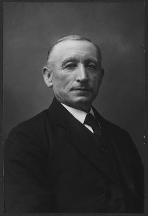
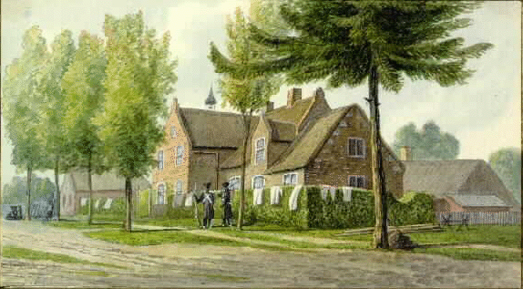

Vermeulen
I Anthonis Jan Aertssen Molenen
Op 4 sep 1526 koopt
Beatrijs Willem Petersdochter, weduwe van wijlen Anthonis Jan Aertssen, "de helft thijdinge van eene heyninge erff geheyten de Wymo[?] ende lants scheyninge [?] te samen houdende int geheel omtrent ene half buynder gemeyn [...] gelegen te t'Alfen omtrent den kercke" en nog een stuk land in Kwaalburg. Verkopers zijn Mechtelt Anthonis Ghijsen, weduwe van Peter Willem Peters en diens kinderen Jan Peter Willem Petersz, Marie, Kathelijn en Adriane.
Bron: Breda, inv.nr. 762, f. 34v, scan 76.
Op 17 aug 1529 koopt Beatrijs Willem Peter Lemmensdr, weduwe van wijlen Anthonis Jan Aertssen, te Alphen een cijns uit een huis te Alphen, omtrent de kerk. Verkoper is Peter Willem Sprangerszone, weduwnaar van Jenneken Jan Willem Petersdochter en voogd over haar wettige onmondige kinderen Adriaenken en Lijsken.
Bron: Breda 762, f. 108r-108v, scans 243-244.
Vader van:
- Jan Anthonis Molenenzoon volgt II
- Hendrick Anthonis Molenenzoon
Overleden tussen februari 1551 en mei 1554 (Breda 765,f.265 en 766,f.142r). Inwoner van Chaam. Getrouwd met Jehenne Henrick Reijnersz van Ghilsedochte, die hem overleeft.
Op 7 juni 1491 koopt Henrick Anthonissen van der Molen en viertel erfpacht van "sijnen broeder" Jan Anthonissone van de Molen. (Breda 763,f.207r de dato 11 feb 1539. Data transfixa 7 juni 1491).
II Jan Anthonis Molenenzoon
Gestorven voor 17 jan 1525. Getrouwd met
Adriane [NN].
Onzeker of dit dezelfde is: Op 22 juni 1507 bekent "Jan Anthoniszone de Molener" ten behoeve van Henrick Adriaen Blerincxzone dat hij omtrent zeven jaren geleden gemalen heeft "opde Lyeschbossche molen", die hij in huur had van de rentmeester van de heer van Nassau. Deze molen stond ten noordoosten van het Liesbos, in Princenhage.
Bron: Breda 417, f.148Ar, scan 354.
Op 17 jan 1525 koopt "Adriane weduwe wijlen Jan Anthonis Molenenzoon" bij de schepenen van Alphen en Chaam ten behoeve van Lucas en Anneken, haar kinderen verwekt bij Jan Anthonis Molenen zone, een erfpacht. Deze is destijds door Henrick Henricx van den Nuweleijnde gekocht van Kathelijn Henric Peter Anssemsz. Ook in de akte genoemd: Beatrijs weduwe Anthonis Molenen en haar zwager en voogd Cornelis Henric Goossens.
Bron: Breda inv.nr. 762, f.1-2r, scan 6-7.
Vader van:
- Lucas Jan Anthonis Molenenzoon volgt III
- Anneken dochter Jan Anthonis Molenenzoon
III Lucas Janssen van der Moolen
Gestorven tussen 19 okt 1604 en 2 apr 1608.
Bron: Breda 507, f. 36v-37r, scan 77-78; Breda 686, f. 287r, scan 296.
Lucas Jan Anthonis Aerts uit Alphen verkrijgt op 8 feb 1543 het poorterschap van Breda.
Bron: Breda 2111, f. 17, scan 30.
Lucas Jan Anthonis Aerts Molenerensone "de cremer wonende tot Breda" verkoopt op 21 aug 1543 een hofstede te Alphen aan Stoffel Gielis Willemszone van Lyer. Medeverkoper is Adriaen Michiel Beckerszone als man en voogd van Enghele Henrick Henricxdr van den Nuweleijnde. De verkopers beloven de hofstede te vrijen met een zester rogge die Anthonis Jan Peter Ghielszoons kinderen heffen. Een andere last is tweeënhalve loopens rogge met vijf stuivers aan het Hof Ter Brake te Alphen. Verder is in deze koop een last van zeven veertel afgekocht ("doot en te nyet"), waarvan Lucas vijf veertel en Enghele twee veertel voor hun rekening namen. De akte verwijst voor de oorsprong van deze last(en) naar schepenbrieven, waarvan de oudste dateert van 20 sep 1496, de tweede van 5 nov 1504 en de jongste van 17 jan 1525 (Breda inv.nr. 762,f.2). Nota bene: een zester is een Bredase inhoudsmaat (345,6 liter) en staat gelijk aan twee halster, dan wel vier veertel of zestien lopen.
Bron: Breda 764, f.153v-154v, scan 315-3165.
Lucas Janssen van der Moelen verkoopt voor 15 mei 1567 een hoeve en erfenis gelegen te Lijndonk onder Bavel aan Gommaer de la Rue. Op die datum roept laatstgenoemde als nieuwe eigenaar rente- en pachtheffers op zich te melden.
Bron: Breda 10, f. 47r, scan 98.
Op 8 feb 1569 verklaart Adriaen Henrick Adriaenssone dat hij van Gommaer de la Rue gehuurd heeft de hoeve tot Lijndonk onder Bavel gelegen die La Rue zekere tijd geleden van Lucas Janssone Vander Molen gekocht en verkregen heeft, met alle landen en weiden erbij horende, met nog een bunder land bij de voorschreven hoeve gelegen genaamd De Boshoven.
Bron: Breda 474, f. 22v.
Noot: Op 13 maart 1574 verklaart Adriaen Cornelis Peters 'dat hij ghisteren van Gomare de la Rue openbaerlick sittende ter herberge genaemt Den Gulden Valck tot Breda aende merct om zijn hoeve naebeschreven ten hoochsten te verhueren, wettelick gehuert heeft deselven zijn hoeve, goeden ende erfenissen [et cetera] te Lijndonck onder Bavel, in al den manieren soo als Aert Cornelis Jan Ghert Meelssone die gebruyct heeft voor den termijn van acht jaren lang.
Bron: Breda 478, f. 59r, scan 121. 'Joncker Gommaer de la Rue' is voor 3 juli 1602 overleden, als zijn weduwe jonkvrouwe Johanna Scholten (ook wel Schooten) een erfrente op een huis in Breda genaamde De Gulde Cam verkoopt, zie Breda 501, f.93r.
Op 20 dec 1572 vermeld: "Margerete Peter Cornelissen weduwe wijlen Lucas Janssen geassisteert met Jan Peter Corneliszone hueren brueder als huer voight", als gerechtigde voor een derde deel in een huis met erf "opte noortzijde" van de Eyndtpoortstrate tot Breda. Proprietarissen van de andere delen zijn de Heilige Geesttafel van Breda voor een derde, en de kinderen Willem Peter Corneliszone (Job, Peter, Melchor, Engele) voor het resterende derde deel. Onzeker of het hier gaat om Lucas Vermolen.
Bron: Breda 477, f. 111r, scan 228.
Zijn kinderen verkopen een huis uit de erfenis van hun vader op 2 april 1608 aan de hoogste bieder, Adriaen Cornelis Maessone. Het zijn "Laureys en Henrick gebroederen Lucas Jans Vermolen zonen, Elisabeth Lucas Jans Vermolendochter met Lenaert Geraerts haeren man en voight, Maeijken Anthonis Henricxdochter daer moeder aff was Deliken des voorschreven Lucas Jans Vermolen dochter geassisteert metten voorschreven Laureys hennen oom als hennen gecoizen voight tot dese saecke, alle voor hen selven. De voorschreven Laureijs en Henrick noch inde naeme van Deliken, Wouteren, Christiaenen en Maeijken wijlen Jan Lucas Jans Vermolen kijnderen. Noch inden naeme van Quirijnen wijlen Anthonis Henricx zoons zone daer moeder aff was de voorschreven Deliken Lucas Jans Vermolen dochter" en nog François van de Poel als voogt over "Heijtlken [ook Heijlwich in de marge genoemd] Raesdochter van Eyndhoven, weduwe van wijlen Adriaen Lucas Janszone Vermolen". Zij verkopen:
huys ende erve met sijn toebehoore ende metten hove daer achter aen liggende gestaen ende gelegen alhier tot Breda inden Doelstraete
De Doelstraat liep van het Gasthuiseinde (nu Boschstraat) parellel aan de oude stadsmuur door het Valkenberg naar het kasteel.
Bron: Breda 507, f. 36v-37r, scan 77-78.
Vader van:
- Laureijs Lucas Jans Vermolen volgt IV-a
- Hendrick Lucas Jans Vermolen volgt IV-b
- Adriaen Lucas Janszone Vermolen
Gestorven na 16 juni 1606 en voor 2 april 1608.
Op 23 feb 1604 kopen ‘Adriaen Lucas Janssone Vermolen ende Heyltken Raesdochter van Eyndhoven sijne huysvrouwe’ een huis en erf met zijn toebehoren en met de hof daarachter liggende ‘tot alsulcke stadt gestaen ende gelegen’ (Breda) van Heyltken Jacop Mathijsdochter weduwe Laureys Peeter Ceulemans (Breda 503,f.32-33).
Op 16 juni 1606 verkoopt ‘Adriaen Lucas Janssone’ een jaarlijks uit te keren cijns van vier carolusgulden uit zijn huis ‘gestaen ende gelegen tot Breda inde Doelstraete’ aan François Jeronimussone vande Poel (Breda 505,f.84r).
Getrouwd met Heijlwich Raesdochter van Eyndhoven.
- Jan Lucas Jans Vermolen volgt IV-c
- Elisabeth Lucas Jans Vermolendochter
Getrouwd met Lenaert Joris Hoemaerts (Houmaerts). Op 25 jan 1618 verklaren Lenaert Joris Hoemaertsone en Elisabeth Lucas Vander Meulendochter zijn huisvrouw met denzelven Lenaert haar man en voogd, schuldig te zijn aan Jan Marten Cornelis Nuijtssone de som van 450 rijnsguldens wegens de koop van een hofstede en erfenis met al haar toebehoorten en erve daaraan liggende onder land, heide, houdende omtrent vier en een halve bunder, gestaan en gelegen onder Bavel op den Rootsberch (sic, Roosberg) hen bij den voorschreven Jan verkocht en alnu overgevest zijnde. De helft betalen ze alnu, de andere helft op 30 jan 1619.
Bron: Breda 689, vestbrieven 1616-1620, f. 80v-81r, scan 84.
Op 4 april 1610 verklaren Lenaert Joris Hoemaertszone en Elisabeth Luijcx zijn huisvrouw te moeten betalen aan Mathijs Matheeuszone de som van 95 rijnsguldens terzake van koop of bate van een huis of woning en erve met toebehoren gestaan binnen Breda op het Ginnekeneind tegenover de Bus- ofte Poeyertoren, over de Marck, hen bij de voorschreven Mathijs verkocht en alnu overgevest zijnde. (Breda 509 ,f.93r, scan 188. Noot: de Poedertoren, waar kruit werd bewaard, was een van de torens van de 14de-eeuwse Eindpoort of Lombardpoort, tegenwoordig hoek Karnemelkstraat en Eindstraat. De poort was in de jaren na 1537 gesloopt, de Poedertoren bleef staan tot 1703. Het Ginnekeneind lag aan de zuidkant van de Mark en de voormalige poort, waar tegenwoordig de Ginnekenstraat begint).
- Deliken Lucas Jans Vermolendochter
Gestorven voor 2 april 1608. Getrouwd met Anthonis Henricx. Kinderen: Maeijken en Quirijnen.
IV-a Laureijs Lucas Jans Vermolen
Gestorven na 7 april 1633. Inwoner van Molenschot onder Gilze.
Op 13 mrt 1582 verkoopt ‘Alijt Jan Meeusdochter met Laureysen Lucas Jansz Vermolen heuren man ende voight voir hen selven’ met de minderjarige kinderen van wijlen Aert Cornelis Meeuszoon een stuk beemd van een bunder groot ‘inde Vucht inde moeren’ aan Gheriden Willem Gerritszoon.
Bron: Breda 486,f.15r.
Op 5 feb 1591 koopt "Laureys Lucas Janss Vermeulen sone" een stuk weide genaamd Delschot (of Den Schot?) houdende omtrent een half bunder, gelegen tot Gilze te Molenschot. Verkoper is Peter Cornelissone van Ghilse.
Bron: Breda 663, f. 177r de dato 5 feb 1591.
Op 23 april 1596 koopt "Laureijssen Lucas Jans zone vander Molen" een stuk erf genaamd Den Wildert, zo onder heide als weide, houdende te samen omtrent vijf vijerendeel bunders, gelegen onder Gilze te Molenschot. Verkopers zijn Cornelis Jan Michielssen van Molenschot en diens kinderen Adriaen, dochter Petre, zoon Jannen, Jenneken en dochter Robbrechtken.
Bron: Breda 664, f.7v.
Op 19 mei 1615 koopt Adriaen Cornelis Jan Dielisdochter weduwe Adriaen Cornelis Laureijssen van Meulenschot een stede, huis, hof en erfenis met toebehoren en met het erf daaraan liggende onder land, weide, bos en heide, houdende tesamen omtrent zes bunder, gestaan en gelegen tot Bavel te Lijndonk. Ligging: oostwaarts grenzend aan Gommaert de La Rue's erfgenamens erf; zuidwaarts aan Lambrecht Peeters en meer andere luiden erven; westwaarts aan 's heerenstraat; noordwaarts aan Peeter Adriaen Cornelissen en Peeter Peeter Geeritssen erven. En nog een stuk erf onder bos en heide houdende omtrent een gemet (= een derde van een bunder) genaamd Het Blijntschot gelegen daaromtrent. Verkopers zijn: Peter Adriaen Cornelissen, Peeter Peeterssen en Adriaen Willemssen van Leur
Bron: Breda 688, f.225, scans 233-234.
Op 7 okt 1615 verklaart Adriaenken Cornelis Jan Dielisdochter met Laureijs Lucas Jans Vermolenzoon haar man en voogd schuldig te zijn aan de kinderen en erfgenamen van wijlen seigneur Johan vanden Corput in zijn leven gouverneur der stad Groningen en kapitein van een compagnie voetknechten ten dienste van de Geünieerde Provinciën, en van Jan vanden Corput Severijnssone tesamen, de som van vijfenzestig rijnguldens het stuk in eens, ter zake van de koop van twee veertellen rogge jaarijkse erfpacht uit en in mindernis van vijf veertelen rogge jaarlijkse erfpacht, geheven en vorderende op zekere onderpanden onder Ginneken gelegen.
Bron: Breda 688, f.239v, scan 248. Zie ook scan 247 waar zij de weduwe Adriaen Cornelis Laureijssen wordt genoemd.
Op 1 juni 1621 verkoopt Laureijs Lucas Jans Vermolensone aan Adriaen Cornelis Jan Michielss een stuk erfgrond bestaande uit land en weide omtrent een bunder groot gelegen te Molenschot onder Gilze. De grond is "bijden vercooper voorgenoemt onder andere van sijne mede erfgenaemen gecoft ende vercregen soo hij seyde".
Bron: Breda 666, f. 12r, scan 25.
Op 7 april 1633 verkoopt "Laureys Luycas Vermolen sone" aan Wijtmanis Cornelis Mathijs sone en Cathelijn Michiel Aertsdochter zijn gerechtigde helft in een stuk beemd groot in het geheel omtrent 450 roeden. Wijtmanis is al eigenaar van de andere helft. De akte vermeldt geen locatie in Breda waar het perceel gezocht moet worden.
Bron: Breda 528, f. 122v. Noot: Wijtman Cornelis Mathijszoon zat in 1632 in de schepenbank van Ginneken en Bavel.
Het cijnsregister van Bavel en Ginneken 1633-1691 vermeldt "Laureijs Lucas Vermolen tot Molenschot", vanwege een bunder heide te Lijndonk "genaempt Den Bolck". Ligging: noord en west Gommar de la Rue erfgenamen, zuid Jan Gerit Meeussen, oost Mathijs Joos Wouters. Hij betaalde de cijns als opvolger van de erfgenamen Aert Dierck Bertrams. Opvolger van Laureijs is "Sebrecht Heijblom tot Breda" (dit is de Bredase brouwer Sebrecht Niclaes Heijblom).
Bron: BHIC 91, inv.nr. 118, f.36, scan 48.
Gertrouwd voor 13 mrt 1582 met Aleijd Jan Meeus Ruelensdochter, die voor 7 juli 1615 is gestorven. Ondertrouwd als Laurentius Lucie te Bavel (RK) op 7 juli 1615 met Adriana Cornely Jan Delis. De pastoor vermeldt dat hun huwelijk te Gilze is voltrokken. Zij is weduwe van Adriaen Cornelis Laureijssen.
Bron: Breda 769, f. 226v-227v, scan 474 de dato 7 nov 1595.
Vader van:
- Adriaen Laureijs Lucas Vermolen volgt V-a
- Jan Laureijs Lucas Vermeulen
Gestorven tussen 22 feb 1661 en 9 dec 1664. Inwoner van Molenschot onder Gilze.
Zie voor beide data: Breda 668, f.140v de dato 22 feb 1661 en f.236r de dato 9 dec 1664.
Zie voor de handtekening van "Jan Laureys Lucas Vermolen", "woonende tot Molenschot onder Gilse" en handmerk van zijn vrouw:
Breda 171, f.37v de dato 20 jan 1657.
Een lijst van geërfden uit circa 1665 vermeldt "de weduwe van Jan Laureijs Vermolen" als bezitter van "ses loopensaet hofs" te Molenschot.
Bron: Dorpsbestuur Gilze en Rijen 1589-1810, Lijst van personen die binnen de jurisdictie Gilze en Rijen huizen en
gronden bezitten, met vermelding van de soort eigendom en de
afmeting, inv.nr. 587,f.219v scan 22.
Op 21 feb 1673 verkopen zijn erfgenamen en die van zijn vrouw Eltien Roeloff Cornelissendochter voor schepenen van Gilze verscheidene percelen grond in Molenschot onder Gilze. Het betreft Jan, Cornelis, Adriaen en Elisabeth (geassisteerd door haar man Cornelis Adriaenssen van Beeck), kinderen van Adriaen Laureijs Lucas Vermolen ; Adriaen en Claes Jaspar Claessensonen 'gebroederen, daer moeder aff was Elisabeth Laureijs Lucas Vermolendochter' ; alle voor de ene helft — en voor de andere helft van de nalatenschap: Peeter Roeloff Cornelissen en Maeijken Roeloff Cornelissen, weduwe van Cornelis Cornelissen, en Cornelis Jan Roeloff Cornelissensone.
Bron: Breda 669, f. 222v-223v.
- Lijsken Laureijs Lucas Vermeulen
Op 17 jan 1640 bekent Jasper Niclaes Janssen als vader en voogd van zijn twee onmondige weeskinderen bij hem verwekt uit Lijsken Laureijs Lucas Vermeulen zijn huisvrouw, honderdvijftig gulden schuldig te zijn op alle goederen van de weeskinderen, aan Nicolaas Adriaen Biekens.
Bron: Breda 667, f. 132r.
IV-b Henrick Lucas Janssen Vermolen
Gestorven tussen 18 jan 1611 en 20 jan 1632.
Op 19 okt 1604 verkoopt Lucas Janssen vander Molen aan Henrick zijn zoon:
- een huis en erf met zijn toebehoorte en met het erf daaraan liggende, zo onder land, weide als heide, houdende tesamen omtrent een bunder, gestaan en gelegen tot Bavel Tervoort; oostwaarts aan 's heeren vroente; zuidwaarts en westwaarts aan Ghijsbrecht Eijckberchts heuren erve; en noordwaarts aan Jan Adriaensen Heybosch' erfgenamen erve.
- nog een stuk land groot omtrent twee loopensaet gelegen tot Lijndonk in de ackere; oostwaarts aan Peter Janssens erfgenamen erf; zuidwaarts aan Laureys Meeus' erfgenamen erve; westwaarts aan Willem Janssens erfgenamen erve; en noordwaarts aan de voorschreven Peeter Janssens erfgenamen erve.
- nog een stuk heiveld groot omtrent [leeg gelaten] gelegen in de Dortse Rijt, Tervoort; oostwaarts: aan Cornelis Mathijssens erf; zuidwaarts aan 's heeren straete; westwaarts aan Steven Aertssens erfgenamen erve; noordwaarts aan Stoffel Wijten en Steven Aertssens erfgenamen erve.
Het huis en de grond zijn belast met een veertel rogge jaarlijkse erfpacht aan de Heiligegeeesttafel te Breda en met de gerechten Heerencijns daar jaarlijks uitgaande zonder enige andere kommer, behoudens dat medepand en bijpand blijven zullen.
Aansluitend (aparte akte) bekent Henrick Lucas Janssen vander Molen in rechten erfvoorwaarden schuldig te zijn jaarlijks te gelden en uit te reiken de voorgenoemde Lucas Janssen vander Molen zijnen vader en zijn na[..] acht carolusgulden het stuk erfcijns te gelden en te betalen.
Bron: Stadsarchief Breda, vestbrieven Ginneken en Bavel 1591-1604, inv.nr. 686, f. 287r, scan 296.
Op 18 jan 1611 verkoopt Henrick Lucas Janssen van der Molen aan Adriaen Jan Aertssen als Heiligegeestmeester ten behoeve van de Heiligegeesttafel tot Bavel een jaarlijks erfcijns, te betalen op Lichtmis, van drie carolusguldens en tweeënhalve stuiver. Op te brengen uit:
- Henricks huis en erf met toebehoren en uitenerve daar aanliggende zo onder land, heide als weide, houdende omtrent een bunder, gestaan en gelegen tot Bavel Tervoort; oostwaarts aan 's heeren vroente; zuidwaarts en westwaarts aan Ghijsbrecht Eijck[bercks?] kinderen erve; noordwaarts aan Jan Adriaenssen Heijbosch' erfgenamen erve.
- nog uit een stuk land van twee lopensaet gelegen tot Lijndonck.
- nog uit en op een stuk heiveld groot een half bunder in de Dortse Rijt, Tervoort.
De onderpanden te vrijen en te waaren met een veertel rogge jaarlijks erfpacht en met de gerechte herencijns daar jaarlijks voor uitgaande. Verkoper mag de cijns van drie carolusguldens tweeënhalve stuiver altijd losen en kwijten met zestien gelijke penningen ineens te geven op de cjinsdag.
Bron: Stadsarchief Breda, vestbrieven Ginneken en Bavel 1611-1615, inv.nr. 688, f. 4v, scan 6.
Zijn vrouw heet mogelijk Catharina. In Bavel wordt op 4 nov 1615 begraven: "Catharina Pauli, uxor Henrici Luceae".
Vader van:
- Pauwels Henricx Vermolen volgt Vb
- Cathelijn Henricx Vermolen
- Jenneken Henricx Vermolen
- Elisabeth Henricx Vermolen
Gestorven voor 14 dec 1632. Getrouwd met Anthonis Jacops.
IV-c Jan Lucas Jans Vermolen
Genoemd op 18 juli 1583 als 'Jan Lucas Janss Vermolen [..] wonende inde Lueventdijck', oftewel Lovendijk bij Breda
(Breda 486, f.96r). Op 19 juni 1584 belooft ‘Jan Luycx Jans inde Luevensdijck woonende’ bij de schepenen van Breda een schuld te betalen inzake tienden
(Breda 486, f.157r).
Vader van:
- Wouter Jan Lucas Vermolen
- Christiaen Jan Lucas Vermolen
- Deliken Jan Lucas Vermolen
- Maeijken Jan Lucas Vermolen
Gedoopt te Breda (RK, Brugstraat) op 27 jan 1583. Vader heet ‘Joannes Lucae inden Lovensdijck’. Getuigen: Peter Cornelis en Cornelia Henrics.
V-a Adriaen Laureijs Lucas Vermolen
Gestorven tussen 1659 en 1665. Inwoner van Molenschot, onder Gilze.
Op 14 jan 1659 bekent Adriaen Laureijs Lucas Vermolen, wonende tot Molenschot, tweehonderd gulden schuldig te zijn aan Cornelis Adriaen Michielssen. In de marge staat dat de kinderen van debiteur Adriaen Laureijs Lucas Vermolen op 1 dec 1665 de tweehonderd gulden, met rente, hebben betaald.
Bron: Breda 668, f. 77r.
In een kohier van de verponding voor Bavel gedateerd 30 juni 1665 vermeldt in Lijndonk:
Adriaen Laureys Lucas Vermolen kinderen nieuwlant (?) groot ontrent – iiij
Bron: Nationaal Archief, Raad van State, Kohier van de verponding Bavel 1665, inv.nr. 2142A, scan 43.
Een lijst van geërfden uit circa 1665 vermeldt "Adriaen Laureijs Vermolen kinderen" als bezitters van "drij loopensaet saeijlandt ende weijde" te Molenschot.
Bron: Dorpsbestuur Gilze en Rijen 1589-1810, Lijst van personen die binnen de jurisdictie Gilze en Rijen huizen en
gronden bezitten, met vermelding van de soort eigendom en de
afmeting, inv.nr. 587,f.219v scan 22.
Zijn kinderen delen de vaderlijke erfenis op 12 okt 1668 bij de schepenen van Gilze en Rijen. Het betreft een huis en percelen grond te Molenschot en in de Lijndoncksen Acker, te Lijndonk onder Bavel. Onverdeeld blijft een perceel heide van anderhalve bunder, gelegen te Molenschot.
Bron: Breda 669, f.106.
Op 9 feb 1674 verkopen Adriaen Adriaenssen Vermolen, Cornelis Adriaenssen Vermolen en Elisabeth Adriaenssen Vermolen geassisteerd door haar man en voogd Cornelis Adriaenssen van Beeck:
ieder voor een gerecht derde paert [..] aen Henrick Jacobs van Molenschot een aenstede, huijs, achterhuijs, hoff ende erve met alle sijne toebehoorte, sonder de camer die voorwaerts ter strate naest uijt ende in moet gaen, soo dat de eijgenaeren vandien geen het minste recht sullen hebben om door dit vercofte huijs ofte erve te mogen gaen, negen oft stegen, groot dese vercofte aenstede omtrent een halff buijnder, ofte het gestaen ende gelegen is onder Ghilse tot Molenschot, oosten de Cappelle, ende Henrick Ribbens erve, suijtwaert Jan Peeters erve, westwaerts Cornelis Jan de Jongh ende Henrick Hermans erve, noortwaert Maeijken Jan Dingemans erve, uijt eenen meerderen pacht van twee veertelen rogge s' jaers aenden armen tot Breda ende metten gerechten heeren chijns daer jaerlijck [..] Ende sal dese erve moeten wegen seecker parcheel lant achter noortwaert aengelegen, toebehoorende Maeijken Roeloffs weduwe Cornelis Cornelis Anthonissen geresten.
Bron: Breda 669, f.233r.
Vader van:
- Jan Adriaen Laureijs Lucas Vermolen
- Adriaen Adriaen Laureijs Lucas Vermolen
Bij de erfdeling in 1668 valt hem onder meer toe: "de helft van den achtersten Wildert, groot omtrent een halff buijnder, oostwaert Jan Adriaen Vermolen met sijne carvel hier tegens gedeelt; suijtwaerts: Cornelis Adriaenssen van Dorst; westwaert Peeter Janssen de Jongh, ende noortwaert Antonij Jan Wouters erve".
Op 14 mrt 1691 bekent Anneken Willem Jan Adriaenssen, weduwe Adriaen Anthonij Loomans, geassisteerd door Adriaen Adriaenssen Vermoolen "haeren jegenwoordighe man ende voogt" een schuld bij de schepenen van Gilze en Rijen (Breda 671,f.111v)
- Cornelis Adriaen Laureijs Lucas Vermolen
Mogelijk identiek aan Cornelis Adriaenssen Vermolen, man van Maeijken Dilis Huybregts, met wie hij in de buurtschap Seters onder Oosterhout woont (Breda 670,f.107v de dato 5 feb 1683). Zij was verwarrend genoeg eerder getrouwd met Cornelis Wouters Vermolen, zo blijkt als zij in 1695 de helft in een stede met huis en anderhalve bunder grond gelegen te Rijen verkoopt aan haar broer Cornelis Dilis Huijbregts (Breda 671,f.273v).
Op 20 maart 1677 komen "Cornelis Adriaenssen Vermeulen weduwnaer wijlen Catharina Henrick Anthonis" en Henrick Anthonis Joosten als voogd een alimentatie- en opvoedingsregeling overeen voor de twee weeskinderen van Cornelis en Catharina, met namen Adriaen en Godert. [Adrianus gedoopt Oosterhout 1 juni 1673; Godefridus gedoopt aldaar 29 nov 1675, peter: Adriaen Adriaenssen]
(SA Oosterhout 308,f.66).
Akte van afscheid 22 mrt 1677 tussen Maeycken Dielis Huyben, weduwe wijlen Cornelis Wouter Cornelis Waeten, geassisteerd door Cornelis Adriaen Peeters 'haaren tegenwoordigen bruijdigom ende voocht', en de toezienders van de onmondige weeskinderen uit haar huwelijk met Cornelis Wouters. De kinderen zijn erfgenaam van een derde in twee lopens zaailand aan het Moleneind in Gilze, samen met Jan Anthonis Ooners (?) en de kinderen van Wouter Wouter Cornelis Waeten. Cornelis Adriaen Peeters tekent "Cornelis Adriaenssen Vermolen" (Schepenbank Gilze en Rijen 80, scan 258 e.v.).
Voor schepenen van Oosterhout trouwen op 30 mrt 1677: Cornelis Adriaenssen Vermeulen, weduwnaar van Catharina Henrick Anthonissen, geboortig en woonachtig tot Seters; en Maeijken Dielis Huyben, weduwe wijlen Cornelis Wouter Cornelissen geboren en woonachtig te Rijen (Trouwboek Oosterhout inv.nr. 50, scan 40)
Het lijkt erop dat hij minstens drie keer was getrouwd. Op 5 feb 1678 belooft Cornelis Adriaenssen Vermolen, weduwnaar Anthonette Peeter Adriaenssen Verbunt, aan Cornelis Cornelis Laus, voogd, en Adriaen Adriaenssen Vermolen, toeziender, dat hij het onmondige weeskind van wijlen Anthonette daarvan hij Cornelis Adriaenssen Vermolen de vader af is, zal onderhouden "in cost ende dranck, linden ende wollen cleederen, sieck ende gesont", waarvoor de vader zal genieten de jaarlijkse baten en profijten van een perceel hooiland omtrent een half bunder te Raamsdonk, onbedeeld met de erfgenamen van Jan Adriaen Anthonissen (Schepenbank Gilze en Rijen 80, scan 246, zie ook de eerdere akte scan 244).
Op 18 jan 1678 verkoopt Cornelis Adriaensen Vermolen een perceel zaailand van vijf loopensaet gelegen te Molenschot onder Gilze aan Anthonis Cornelis Huijbrechts. Ligging: oost- en westwaarts Adriaen Adriaensen Vermolen; zuidwaarts Teunis Jan Wouters en noordwaarts de weduwe van Jan Dingeman Bolsters.
(Breda 670,f.40r).
Op 5 sep 1679 lenen Cornelis Adriaenssen Vermolen en "Maeijken Dielis Huijben sijne huijsvrouwe, woonende ten Rijen onder Gilse", 200 gulden van Claes Jan Peeters vanden Corput, inwoonder van Breda, tegen een rente van 5 gulden per 100 gulden.
(Breda 670,f.61r).
Gedoopt (RK) Rijen 23 jan 1678: Catharina, dochter Cornelius Adriani Vermeulen en Maria Dilis Huijben.
- Lijsbeth Adriaen Laureijs Lucas Vermolen
Getrouwd met Cornelis Adriaen van Beek. Op 12 okt 1668 bekennen "Cornelis Adriaenssen van Beeck ende Lijsbeth Adriaenssen Vermolen sijne huysvrouwe" bij de schepenen van Gilze en Rijen 320 gulden debet te zijn aan de regenten van het militair hospitaal in Breda. In de marge verklaart de crediteur op 12 feb 1675 dat Cornelis de schuld heeft voldaan (Breda 669,f.108v).
V-b Pauwels Hendricks Lucas Vermeulen
Geboren rond 1580, gestorven na 4 aug 1662. Inwoner van Bavel.
Onzeker, waarschijnlijk niet dezelfde man: op 25 feb 1603 verkoopt Pauwels Henricxzone Vermolen aan Cornelis Adriaen Noutszone een stuksken wei houdende omtrent twee lopensaet in deze doorsteken [?] schepenen br[..] begrepen, tot alzulkse stad gelegen met al zulkse commer ende waernisse..[et cetera]
Bron: Breda, Vestbrieven Gilze en Rijen 1596-1610, inv.nr. 664, f. 124v, scan 252. Nota: de vestbrieven Gile en Rijen vermelden in deze jaren ook een Pauwel Henrick Pauwels Emondts Vermolen.
"Pauwel soone Hendrick Lucas vander Moolen als man ende momboir Arnolda sijne huysvrouwe" verkoopt op 5 maart 1613 een perceel zaailand gelegen te Tilburg uit de erfenis van zijn vrouws familie. De akte bevat een lange lijst medeverkoopers, onder wie nazaten van Mathijs Janssoon van Gorp en Jenneke Niclaes Bernaerts. Arnolda blijkt een kleindochter van dit echtpaar te zijn, als dochter van wijlen Adriaen Aertsoon bij Lijsken, dochter Mathijs Janssoon van Gorp. Het perceel grond is 3 lopens en 43 roeden groot, en heet ter plaatse Quelacker (?). Koper is Isebrandt Gerit Jan Brock, een schepen van Tilburg.
Bron: SAT 7994, f.32 de dato 5 mrt 1613.
Op 28 dec 1626 ondertekent 'Pauwel Henrick Lucaszone tot Bavel woonende' als getuige een huurakte voor een afgebrande hofstede met gronden, tezamen zes bunder, gelegen in Bavel aan het Kerkeind. Jan Dielis Jan van Luycxzone wonende te Westwezel huurt deze van Magdaleentken Peter Kemps weduwe François van Poel.
Bron: Breda, NA 45, f.20r, scan 44. Het handmerk van Pauwel lijkt op de hoofdletter Y.
Op 20 jan 1632
verkoopt Pauwel wijlen [Hendrick] Luycaszone met andere erfgenamen een hofstede met erf en toebehoorden en met het erf daaraan liggende en toebehorende, groot omtrent vierënhalve bunder, gelegen onder Ginneken tot Bavel aan De Roosberg, aan Christiaen Anthonissen vander Daesdonck vorster tot Ginneken.
Medeverkopers:
- Jenneken, zuster van Pauwel en met hem ook in naam van niet nader genoemde mede-erfgenamen;
- Jan Laureys Vermolenszoon, uit naam en van wegen Laureys Luycas Vermolensone zijnen vader;
- Sijmon Joachim Stommelszoon als man en voogd van Maeyken Anthonissen;
- meester Henrick Eyckberchs, secretaris tot Ginneken als gemachtigd en in naam van Quirijn Anthonissen en van Willem Janssen Vermolen. Procuratie daarvoor is gepasseerd voor schepenen van Ginneken dezer maand op 16 januari 1632.
Ligging van de hofstede: westwaarts aan Guilliam vander Platens erve en voorts omgaande aanden 's heerenstrate en vroente. Te vrijen met vijftien stuivers het stuk 's jaars aan het klooster van Vredenberch en met de gerechte herencijns daar jaarlijks uitgaande.
Bron: Breda 692, f. 23v, scan 35. Noot: Simon Jocchemsz Stommels, weduwnaar van Maijken Theunis, ondertrouwt op 29 mrt 1642 te Geertruidenberg met 'Maria Gerrets Ruijsraet, j:d: van Heusden ende camenier van mevrouw de Baronesse Slavata' Attestatie om tot Dordrecht te trouwen afgegeven 14 april.
Op 14 dec 1632 verkopen Pauwels Henricx Vermolen voor zichzelf en als voogd van Cathelijn en Jenneken des voorschrevens Henricx Vermolens zoons zijne susteren, mitsgaders nog als voogd en in name van Lijntken Anthonis Jacobs onmondige dochter, daar moeder aff was Elisabeth des voorsc. Henricx Vermolen soone dochter, en Jan Dillis Janssone als gemachtigde en in name van desselvens Dillissen sijne vader beide welke hij wettelijk geconstituteerd en gemachtigd gemaakt is; de gerechtigde helft in een stuk beemd groot omtrent vijfhonderdvijftig (550) roeden, daar af de andere helft Laureijs Luycas Vermolen toebehoort, gelegen te Teteringen in de Vucht, aan Wijtman Cornelis Mathijszoon.
Bron: Breda 528, f. 96r, scan 194. Noot: Wijtman Cornelis Mathijszn was schepen van Ginneken en Bavel in dit jaar 1632.
Op 22 juli 1658 maken Pauwels Hendrick Lucas en Huijbrecht Cornelis Huijbrechts, beide inwoners van Bavel, afspraken met Franchois van Rijckevorssel, borger van Breda, over de opbrengst van gepacht zaailand, gelegen "te Bierdonck buijten het Gasthuijsijnde alhier tot Breda", en nog een half bunder gelegen "inden Teteringsche dijck genaempt den Slach molen".
Bron: Breda 162, f. 101, scan 148.
 |
|
Breda 22 juli 1658: het handmerk (een soort Y) van Pauwels Hendrick Lucas, inwoner van Bavel.
|
Op 7 jan 1659
belooft Pauwels Henrick Luijcas Vermolen 'woonende onder Bavel op de stede toebehoorende de kijnderen van Gosuinus van Bernagien in sijnen leven brouwer inden Haen binnen Breda' binnen een halfjaar 445 gulden en zes stuivers te betalen aan Johan Roelants 'borger ende coopman binnen Breda soo voor hem selven als mede ten behoeve der voorschreven kijnderen'. Het gaat om onbetaalde huurpenningen voor de voorgemelde stede, berekend tot Sint Maarten 1658. Pauwel stelt tot meerdere zekering van betaling als pand enkele opgesomde haaf- en meubelgoederen mitsgaders koren en andere veldvruchten. Enkele gemelde goederen zijn een kar, wagen, ploeg, een bruine merrie van zeven à acht jaren met een witte kol voor het hoofd, een bruin ruinpaard ook van zeven à acht jaren insgelijks met een witte kol voor het hoofd. en melkkoeien.
Bron: Stadsarchief Breda, vestbrieven Ginneken en Bavel 1654-1664, inv.nr. 695, f. 91r, scan 94.
Op 4 aug 1662 verklaart "Pauwels Hendrick Vermeulen, out borgemeester ende gesworene respective van Bavel, out ontrent 82 jaeren" met andere notabelen van zijn dorp dat zij "noijt hebben geweten ofte gehoert datter oijt eenige questien over de [..] der thienden inde bovenstaende attestatie vermelt is geweest" (slecht leesbaar, gaat in de kern over de tienden van "Lijndonck gelegen onder Bavel en Gilse".
Bron: Breda 188, f. 137, scan 196.
 |
|
Breda 4 augustus 1662: het handmerk (een soort Y) van Pauwels Hendrick Vermeulen, inwoner van Bavel.
|
Getrouwd met Arnolda Adriaensdochter Aertssen (Aerken, Eijcken, Adriana), dochter van Adriaen Aertssen Dirck Eliens bij Lijsken Mathijs Jan van Gorp.
Uit dit huwelijk:
- Adriaen Pauwels Henrickx Vermeulen volgt VI
- Adamus Paulus Henric Luceae
Gestorven Bavel 4 nov 1615: "Filiolus Pauli Henrici Luceae et Adrianae alias Aercken Adrianai, vocatus Adamus".
- Adamus Paulus Henric Luceae
Gedoopt Bavel 4 dec 1616. Doopgetuigen: Adriana Cornelii Jan Dieles en Anthonius Jacobi Rumoldi. Op 7 juli 1615 trouwen te Bavel (RK): Adriana Cornely Jan Delis en Laurentius Lucie.
- Catharina Paulus Henric Luceae
Gedoopt Bavel 3 nov 1619. Doopgetuigen: Anthonius Jacobi uit Ginneken en Clara Emberti uit Gilze. Waarschijnlijk identiek met de in Bavel geboren Catharina Pauwels Hendriks Vermeulen die op 3 feb 1664 te Ginneken en Bavel trouwt (NH) met Peter Quirijn Cornelis Nijs geboren te Bavel is, en beide woonachtig te Bavel. Deze Peter Nijs huurt en bewoont, zoals vermeld in januari 1680, 'eene schoone welgelegen stede mette huysinge, schuere, boomgaert ende landerijen daertoe behoorende, gestaen ende gelegen tot Bavel onder Ginneken achter den IJpelaer' (Breda, Notaris P.B. van Oerle, inv.nr.293,akte 9 dd 17 jan 1680).
3 december 1703: rekening, staat, inventaris, scheiding en deling van de nagelaten goederen van Peter Quirijn Neys en Cathalijn Adams (sic) Vermeulen, echtelieden (Schepenbankarchief Ginneken en Bavel, inv.nr.20).
- Godefridus Paulus Henric Lucen
Als jong kind begraven Bavel 5 sep 1620 (‘obiit Godefridus filiolus Pauli Henrici Lucen et Adriaene Adriani’).
- Henricus Paulus Henric Luceae Vermeulen
Gedoopt Bavel 24 nov 1622, moeder heet Adriana Adriani. Doopgetuigen: Jacobus Mattheus Pauli en Margareta Jacobi vander Biestraeten vrouw van Petrus Theodori. Begraven te Bavel (RK) op 4 nov 1624: "Henricus filius Pauli Henrici et Adriane Adriani".
- Lysbeth Paulus Hendricks
Geboren te Bavel, en als inwoner van dat dorp getrouwd voor de predikant van Ginneken en Bavel (NH) op 27 feb 1661 met Aert Cornelis Rous (Arnoldus Cornelissen Raus), jongman geboren te Teteringen en wonende te Bavel; het roomse huwelijk volgt diezelfde dag te Bavel. Uit dit huwelijk wordt op 8 dec 1661 te Bavel een dochter Arnolda gedoopt, met peetouders Catharina Pauwels Hendrix en Henricus Jansens.
VI Adriaen Pauwels Hendricks Vermeulen
Getrouwd (RK) te Bavel op 15 feb 1633 met Margareta Cornelissen de Bruijn. Op 1 dec 1658 te Bavel begraven: Margareta Cornelissen. Adriaen is hertrouwd (NH) te Ginneken op 9 nov 1664 met Cathalijn Ariaen Ariaenssen weduwe van Jacob Cornelissen Mouw.
Uit het eerste huwelijk:
- Cornelis Adriaen Paulus
Gedoopt Bavel 5 jan 1634. Peter en meter: Bartholomeus Peters en Margarethe Jacobi en wier naam Rutger Vogels.
- Heijlwigha Adriaen Paulus
Gedoopt Bavel 30 apr 1635. Peter en meter: Adriaen Antonis en Alijda Rodolphus. Getrouwd als jongedochter geboren en wonende te Bavel aldaar (NH) op 28 feb 1672 met Cornelis Jan Cornelis Hendrickx van Beers alias Van der Vennen. Hij hertrouwt (NH) te Ginneken op 17 apr 1689 met Leijsbet Peter Cruysmans, jongedochter geboren te Heusdenhout.
- Cornelis Adriaen Paulus
Gedoopt Bavel 21 dec 1636. Peter en meter: Adam Paulus en Catharina Jansen.
- Antonius Adriaen Paulus
Gedoopt Bavel 17 mei 1641. Peter en meter: Peter Meus Bartholomeus en Catharina Pauwels.
- Henricus Adriaen Pauli Henrici
Gedoopt Bavel 20 juli 1646 (tweeling). Peter en meter: Peter Theodori en Elisabeth Pauli Henrici.
- Joanna Adriaen Paulus Henrici
Gedoopt Bavel 20 juli 1646 (tweeling). Peter en meter: Adriaen Cornelii en Catharina Petri.
Bavel
Adam Pauwels Vermolen
Gestorven tussen oktober 1668 en 20 dec 1680. Vermoedelijk zoon van bovengenoemde Pauwels Hendricks Lucas Vermeulen.
Getrouwd (RK) te Bavel op 12 feb 1653 met Catharina Jacob Adriaen Borsten, met wie hij in 1661 te Bavel woont, in het gehucht Lijndonk (zie de doopakte van hun dochter Arnolda). Huwelijksgetuigen: heer Sebastianus van IJpelaar en heer Ewaldus van Wijck.
De familie Borsten bezat kennelijk grond in Lijndonk. Op 15 mrt 1661 verkoopt de ongetrouwde Maeijcken Jacob Borsten geassisteerd door Jan Marten Cornelissen haar gekozen voogd zestig roeden land, met het derde part in de schuur aldaar, gelegen in Lijndonk, aan Joachim Laureijs Willemssen en diens vrouw Neeltken Jacob Borsten.
Bron: Breda, vestbrieven Ginneken en Bavel 1654-1664, inv.nr. 695, f. 140v, scan 144.
Op 9 juni 1676 verkopen Jan Martens Cornelissen als voogd en Peeter Quirijn Nijs als toeziender van de zes onmondige weeskinderen van Adam Pauwels Vermolen; idem Neeltien Jacob Borsten geassisteerd met Jochum Laureijs Willemsen haar man en voogd voor haarzelf; Jan Marten Janssen ook voor zichzelf; en Josijntien Marten Janssen meerderjarige dochter geassisteerd met de voornoemde Jan haar broer als haar gekozen voogd en assistent in dezen ; van welke Jan en Josijntien de moeder was Adriaentien Jacob Borsten ; aan de meest biedende Pauwelus Jacob Brocx en Bartholomeus Janssen van Geffen, ieder half en half, een perceel zaailand genaamd de Voshoolen, groot omtrent 100 roeden, gelegen onder Gilze tot Lijndonck, oostwaarts 's Heeren vroente, zuidwaarts Jacob Adriaen Borsten erfgenamen, westwaarts en noordwaarts de erfgenamen Laureijs Meeus Brocx en te vrijen met 42 stuivers Sint Jacob aan de Armen van Bavel, en met de gerechte heerencijns daaraan gevest.
Bron: Breda 670, f. 17v.
Noot: Jan Marten Cornelissen is op 4 okt 1665 te Ginneken (NH) getrouwd met Sijken Jan Wouters, beide geboren tot Heusdenhout en woonachtig te Bavel.
Ook op 9 juni 1676 verkopen bovengenoemde personen bij de schepenen van Ginneken en Bavel:
- aan de hoogste bieder Jan Peeter Boerselaers een aanstede, huis, hof, boomgaard, met het erf daaraan gelegen, groot omtrend 300 roeden, gelegen tot Bavel te Lijndonk. Ligging: oostwaarts en zuidwaarts de erfgenamen van Cornelis Meeus Brocx' erve; westwaarts de drie hier afgedeeld toebehorende de erfgenamen Jacob Adriaen Borsten; en noordwaarts 's heerenstraat. Belast met pachten aan het Gasthuis te Breda, de kerk te Bavel en de gerechte herencijns.
- nog 300 roeden weiland, eveneens te Lijndonk, aan Adriaen Cornelis Adriaenssen.
- nog een perceel zaailand genaamd De Lange Vooren, groot een bunder, gelegen te Lijndonk, aan de heer Johan Jagers, secretaris van Oudenbosch en Standaardbuiten.
- nog aan Niclaes Bernaerts Stoops een perceel weide genaamd De Wilheyninge, groot 300 roeden, te Lijndonk.
Bron: Breda, vestbrieven Ginneken en Bavel 1674-1684, inv.nr. 696, f. 67r, scan 71.
Op 20 dec 1680 verkopen Adrianus Jan Marten Cornelissen als voogd en Peeter Quirijn Nuijs als toeziender van Jacob en Adriaen, de onmondige kinderen van Adam Pauwels Vermolen en Lijntien Jacob Adriaen Borsten, echtelieden beide zaliger, aan de hoogste bieder Jan Jacob Meeus een perceel zaailand groot omtrent 40 à 50 roeden, gelegen onder Gilze "opden Leegen Aert", oostwaarts Aert Thomas Maes, zuidwaarts aan de straat aldaar, westwaarts Jan Corstiaensen van Dijck nomine uxoris, en noordwaarts de kinderen van Neeltien Jacob Adriaen Borsten, te vrijen met de gerechten herencijns daar jaarlijks op gevest.
Bron: Breda 670, f. 79v.
Dezelfde personen verkopen
op diezelfde 20 dec 1680, namens de twee weeskinderen Jacob en Adriaen, bij de schepenen van Ginneken en Bavel aan de heer Johan Jagers, secretaris van Oudenbosch en Standaardbuiten, een perceel zaailand van 100 roeden te Bavel op de Lijndonkse Akkers.
Bron: Breda, vestbrieven Ginneken en Bavel 1674-1684, inv.nr. 697, f. 186r, scan 190).
Lijntjens zuster Neelthien Jacob Adriaens Borsten en haar man Joachim Laureijs Willemssen kopen op 13 okt 1654 een zesde part in een bunder land te Lijndonk onder Gilze "opten Leegen Aert [...] oistwaerts 's heeren heijde, suijtwaerts de weeskinderen van Bernart Claessen ende Anthonis Adriaen Anthonissen, westwaerts des coopers erve [..] noortwaerts de weduwe van Jacob Adriaen Borsten erve" van Marten Jan Mathijssen.
Bron: Breda 668, f.13v.
Uit dit huwelijk:
- Jacobus Adam Pauwels
Gedoopt Bavel (RK) 29 okt 1653. Getuigen: Dingeman Jacobs en Catharina Pauwels. Op 22 feb 1707 is gestorven te Bavel "Jacob Adam Vermeulen sijn vrouw".
Op 21 dec 1706 bekent "Jacob Adam Vermoolen woonende tot Bavel onder Ginneken" schuldig te zijn aan de eerzamen Cornelis Janssen van Dorst "inwoonder en tuinman alhier binnen Breda" een som van driehonderd gulden.
Bron: Breda 426, akte 121, scan 209, met handtekening.
 |
|
Breda 21 dec 1706: de handtekening van Jacob Adaem Vermoolen.
|
- Henricus Adam Pauwelsen
Gedoopt Bavel (RK) 27 okt 1654. Getuigen: Joannes Mertens en Catharina Hendricx. Getrouwd als Hendrick Adam Vermoolen, jongeman geboortig en woonachtig tot Bavel, voor de schepenen van Ginneken en Bavel op 29 juni 1681 met Adriaantje Jacobs, geboortig Sijt de Hage (=Princenhage) en woonachtig tot Teteringen.
Op 20 dec 1680 genoemd: het weeskind van Henrick Adam Pauwelssen daar moeder aff was Adriaentien Cornelis Quirijn Cornelis Nijssen (Bron: Breda, vestbrieven Ginneken en Bavel 1674-1684, inv.nr. 697, f. 185v, scan 190).
Hertrouwd (NH) als weduwnaar van Adriaantje Jacob Meertens te Ginneken en Bavel 17 okt 1694 met Adriaantje Peter Vriends, jongedochter van Rijsbergen en wonende te Heusenhout. Op 25 maart 1702 geven de schout en schepenen van Rijsbergen Adriaentien Peeter Jan Vrints, "oude ingeboorne, getrouwt zijnde met Hendrick Adams Vermeulen, gebooren tot Ginneken en aldaar woonende", een borgbrief (Bron: Breda 41,f.79, scan 147).
Uit het tweede huwelijk (niet volledig):
- Catharina Hendrick Adam Vermeulen
Gedoopt (RK) Ginneken 5 mrt 1697. Doopgetuigen: Jacobus Adams Vermeulen en Johanna Cornelis van der Venne loco cuius Joanna suscepit Margareta Martin Aerden. Noot: een Joanna van der Venne wordt te Bavel gedoopt 15 sep 1675 als dochter van Cornelis Jan Cornelis Hendrickx van Beers alias Van der Vennen bij Heijltje Adriaen Paulus Vermolen.
- Barbara Hendrick Vermeulen
Gedoopt (RK) Ginneken 23 mrt 1701. Getuigen: Peeter Vrints (absent) en Catharina Peeters vande Biestraeten. Getrouwd als jongedochter wonende te Ginneken aldaar (NH) op 5 aug 1742 met Adriaen Wouter Kanters, jongeman geboren en wonende te Ginneken. Kanters is voor 25 juli 1754 overleden (Bron: Breda 854, akte 90).
- Elisabeth Adam Pauwels
Gedoopt Bavel (RK) 28 sep 1656. Getuigen: Adrianus Laurentii en Maria Joannis.
- Adriaan Adam Paulus
Gedoopt Bavel 22 feb 1659. Getuigen: Cornelius Cornelis Matthias en Maria Jacobi Adriaens.
- Arnolda Adam Pauwels
Gedoopt Bavel (RK) 28 jan 1661, begraven aldaar in februari 1661 ("obiit Arnolda Adami Pauwels 28 January hoc anno baptizata in Lendonck"). Meter: Helena Adriaensens. Ouders woonachtig in Lijndonk.
- Barbara Adam Pauwels
Gedoopt Bavel (RK) 21 mei 1666. Getuigen: Cornelis Adriani en Lyntjen Adriaenssen. Moeder heet "Lyntjen Jacobs". Op 24 okt 1694 trouwt (NH) in de Kleine Kerk te Breda Barbara Adams Vermeulen, jongedochter van Bavel wonende te Teteringen, met Jan Joosten, weduwnaar, met trouwbrief. RK-huwelijk dezelfde dag in de Nieuwstraat, onder getuigenis van Anna van Tolhuijsen en Catharina Sciffers.
- Erckjen Adam Pauwels Vermolen
Gedoopt Bavel (RK) 1 mei 1669. Getuige: Sijken Jans. Moeder heet "Cathalijntje Jacobs". Naam kind ook wel Erentruda. Op 27 mei 1697 geeft de predikant van de Grote Kerk in Breda "Erken Adams Vermolen, jongedochter van Bavel" en wonende tot Heusdenhout en Peter Goverts van Biestraten, weduwnaar onder Teteringen, attestatie om te trouwen in Ginneken. Op 2 juni volgt voor de predikant van Ginneken en Bavel het huwelijk tussen Eerken Adam Vermolen, geboortig van Bavel in Heusdenhout woonachtig, met Peter Goverts Biestraten, weduwnaar van Dingena Ruth Meuss wonende onder Teteringen.
Uit dit huwelijk:
- Catharina Biestraten
Gedoopt Teteringen 16 juni 1698 (Joanna Gielen). Moeder heet Arnolda Adami.
- Wilhelmina Biestraten
Gedoopt Teteringen 31 dec 1699 (Nicolaa Thunis Claessen en Godefridus Andreae Oomen). Moeder heet Arnolda Adams.
- Dimpna Biestraten
Gedoopt Teteringen 1 jan 1702 (Ruth Thomisse en Catarina Henrick Vermolen).
-
Adam Peter Biestraten
Gedoopt Teteringen 18 maart 1703 (Antonia Danielis en Henricus Adami). Moeder heet Arnolda Adami.
Noot: het doopboek bevaten hiaten, die lopen van maart 1662 tot mei 1666; juni 1666 tot april 67; november 1720 tot april 1721.
Adriaan Adam Paulussen Vermoolen
Getrouwd te Bavel op 19 mei 1686 (NH ondertrouw 9 mei) als "Adriaen Adam Paulussen jongman van Bavel" "met
Jenneken Cornelis Jansen "jongedochter van Gils, beide woonagtigh tot Bavel".
Op 25 mei 1706 verklaart Adriaen Adams Vermolen, wonende tot Heusdenhout onder Ginneken, gehuurd te hebben van Bartholomeus Janssen van Geffen, inwoner van Bavel:
sijne stedeken genaempt Den Straetacker, mede gelegen onder Heusdenhout, tegenover de stede van den heer Vande Zande hem huerder bekent, ende dat voor den tijt van ses jaren mits hebbende ieder sijn berouw met de drije eerste jaeren omme de huer langer te continueren ofte vertrecken en daeruijt te scheijden
De huursom van jaarlijks 30 gulden dient te worden voldaan alle jaren op Sint Martensdag, te beginnen dit jaar XVII en zes.
Bron: Breda 426, akte 59, scan 109.
 |
|
Breda 25 mei 1706: de handtekening van Adriaen Adams Vermolen.
|
Uit dit huwelijk:
- Adam Vermeulen
Gedoopt Bavel 8 okt 1687. Getuige: Lucia Jans.Waarschijnlijk identiek met "Adam Vermeulen jongeman van Ginneken en aldaar wonagtig (sic) op Cauwelaar" (het gehucht Kauwelaar), die op 11 feb 1720 in de kerk van Ginneken trouwt (NH) met Kornelia Adriaan Koopmans, jongedochter van Meer en woonachtig "op de Rakens" (het gehucht Rakens). Op 17 mrt 1724 is "Adam Adriaen Vermeulen" in Ginneken (RK) peter voor de dopeling Adrianus Coopmans, zoon van Jacobus Adriaensse Coopmans en Catharina Jan Antonisse.
- Joanna Vermeulen
Gedoopt Bavel 9 juli 1689. Getuige: Gertrudis Cornelissen. Getrouwd (NH) als ‘Jenneken Adriaen Adams Vermoolen, jongedochter van Bavel w(onende) tot Heusdenhout’ te Ginneken en Bavel op 27 feb 1718 met Lenaert Jan Antonissen, jongeman van Dongen ook wonende te Heusdenhout. Een zoon Jan Antonissen wordt op 5 dec 1718 te Teteringen gedoopt.
- Paul Vermeulen
Gedoopt Bavel 14 juli 1691. Getuigen: Antonia Jans in plaats van Catharina Pauwels.
- Elisabeth Vermeulen
Gedoopt Bavel 10 juli 1698. Getuigen: Eva [.?] Jansen in plaats van Adriaen Jan Mertens.
I Paulus Adam Paulus Vermeulen
Gestorven voor 8 jan 1726. Getrouwd (NH) 8 mei 1689 te Ginneken en Bavel als "jongman van Ginneken" met
Claesken Adriaen Cornelis Wieriken "jongedochter van Gils en alhier woonagtigh". Het roomse huwelijk vindt plaats op 8 mei te Bavel, de bruid heet dan Nicolaa Adriaensen, met getuigen Ida van Dijck en Barbara Hoosemans (te Breda wordt 2 okt 1724 Barbel Peeter Hoosemans begraven, vrouw van Paulus van der Laet "borger en mr. coper en blickslaeger alhier". Zij was geboren te Goirle en trouwt als inwoner van Ginneken & Bavel op 20 juni 1700 met Peter van der Laet, geboren en wonende te Breda).
Op 8 dec 1719 wordt Paulus Vermeulen genoemd als huurder van een stede ter grootte van een half bunder, gelegen te Bavel "op het Kerckeijnt", bestaande uit huis, kooi en erve. Hij heeft de stede voor een termijn van vier jaar in gebruik, waarvan het eerste jaar is aangevangen half maart 1719 en dat half maart 1723 zal aflopen. Paulus betaalt hiervoor jaarlijks 34 gulden "en een coppel vette hoenderen". De stede wordt verkocht door de broers Adriaen Geerard en Johan Anthonij Le Court, en de koper zal de huurder "moeten gedoegen".
Bron: Breda 589, akte nr. 36.
Op 8 jan 1726 verschijnt bij notaris Benjamin de Beunje in Breda:
Claesken Adriaen Wiercken, wedue wijlen Paulus Vermeulen woonagtig onder Ginneken tot Bavel, geassisteert voor soo veel des nootsacke mogen wesen met Adriaen Pauwels Vermeulen haren sone, als hare in desen gecoizen voogt, en assistent, de welcke bij dese verklaerde te cederen, te transporteren, op te dragen en in vollen eijgendomme over te geven, aan, enten behoeve van Adam Vermeulen, mede woonagtich als voore, alle hare haeffelijcke en meubilaire goederen, en effecten, als eerstelijck drije koeybeesten, een peert, karre, ploegh en eegh, agthondert bussels strooij, een kas met een kist, en verders alle hare verdere haeft en meubele goederen die de comparante transportante eenigh sints is hebbende, toebehoudende en possideerende geen d'alderminste uytgesondert.
Bron: Breda 585, blad 218.
 |
|
Breda 8 januari 1726: de handtekeningen van Adam Vermeulen en Adriaen Pauwels Vermeulen.
|
Uit dit huwelijk:
- Adriaan Paulus Vermeulen volgt IIa
Gedoopt Bavel 14 okt 1691. Getuigen: Peter Crijnen en Margarita Peeter Vinsenten.
Over de peetmoeder: Margriet Peter Cornelis Vincenten, jongedochter geboortig van Gilze en tot Bavel woonachtig, trouwt op 18 feb 1671 voor schepenen van Ginneken en Bavel met Thomas Peeters vanden Schalieboom, jongeman geboren en wonende te Bavel (ondertrouw te Breda 17 jan). Een dochter Maria wordt op 3 okt 1688 te Bavel gedoopt (RK) met een zeker Nicolaa Adriaen Vincken als peetmoeder. Is dit wellicht Nicolaa Adriaen Wiericken?
- Adam Paulus Vermeulen
volgt IIb
Gedoopt Bavel 18 maart 1694. Getuigen: Catharina Peeter Vlaming, in plaats van Barl[?] Adam Vermoolen.
- Catharina Vermeulen
Gedoopt Teteringen 15 sep 1699. Getuigen: Jacobus Vermolen en Catharina Vermolen. Moeder heet "Nicolaa Wiercks". Getrouwd (NH-register) Gilze-Rijzen 2 dec 1731 als "Catrijn Vermeulen jongedochter geboortig van Bavel en woonachtig alhier" met Cornelis Hendrik Paulusz, jongeman geboortig en woonachtig te Gilze-Rijen. Op 2 okt 1748 wordt te Gilze "Cornelis Hendrick Paulusen" begraven.
Noot: Een gemaallijst uit 1725 vermeldt Cornelis Hendrick Paulussen, Hendr[ick] Paulussen de vader, Elisabeth van Minderhout de meijt" als behorende tot een belastingplichtig huishouden in Verhoven, een buurtschap in Gilze.
Bron: Dorpsbestuur Gilze en Rijen 1589-1810, Gemaallijst 1725, inv.nr. 653,f.15v scan 16.
De gemaallijst voor Verhoven voor het jaar 1738 vermeldt: "Cornelis Hendr. Paulussen, Catrina Vermolen de vrouw, en Hend. Paulussen de vader".
Bron: Dorpsbestuur Gilze en Rijen 1589-1810, Gemaallijst 1738, inv.nr. 666, f.15v, scan 17.
IIa Adriaan Paulus Vermeulen (1691-1743)
Volgens zijn huwelijksakte geboren in Baarle, begraven (NH) te Gilze 23 dec 1743. In Baarle is geen doopakte gevonden, uit schepenakten blijkt dat hij uit Bavel kwam. Kennelijk is er een fout gemaakt in de huwelijksakte. Mogelijk heeft de dominee "Bavel" verstaan als "Baal".
Als inwoner van het gehucht Molenschot getrouwd voor de predikant van Gilze-Rijen op 15 feb 1733 met Cornelia Adriaan Moonen, gedoopt te Alphen op 10 mei 1700 als dochter van Adriaen Claes Moonen (1679-1728) bij Engelken Adriaen Janssen van Heesch. Haar vader was timmerman en woonde in Alphen, in het gehucht Ter Over; zijn kinderen delen 16 jan 1754.
Bron: SAC 613, f.71v. Zie Leo Adriaenssen, 'Elf generaties Moonen' in: De Brabantse Leeuw 19 (1970), met name p.44.
De Gemaallijst (een belastingbron) voor het jaar lopende van 1 okt 1736 tot 30 sep 1737, vermeldt:
Adriaan Vermolen, Cornelia Moonen de vrouw, Adriaan de soon
Dorpsbestuur Gilze 664, f.7v, scan 9.
Op 15 maart 1739 maken Adriaan Paulus Vermolen en Cornelia Adriaan Moonen "eghte luijden ende inwoonders alhier" bij de schepenen van Gilze en Rijen hun testament op. Cornelia is "sieckelijck naar den lichaeme, sittende op eenen stoel inde hoeck van de schouwe". Ze benoemen elkaar tot erfgenaam en de langstlevende krijgt de plicht hun beider kind of kinderen te onderhouden en op te voeden tot het bereiken van de 25-jarige leeftijd. Hij tekent met "Adriaen Vermolen", Cornelia tekent met een kruis en verklaart "vermits haere sieckte niet anders te connen schrijven".
Bron: SAG inv.nr. 83,f.198-199.
Op 27 mei 1739 wordt te Gilze "de vrou van Adr. Vermeulen" begraven.
Bbron: Register van ontvangst voor kerkerecht voor het begraven.
Adriaan hertrouwt voor de predikant van Gilze-Rijen op 4 februari 1742 met Catharina Adriaen Timmermans, weduwe van Jan van Rijmeland (NH-ondertrouw 20 januari). De bruidegom heet Adriaen Paulus Vermoolen weduwnaer van Cornelia Adriaen Moonen woonagtig alhier. Zij was geboren te te Gilze-Rijen en aldaar getrouwd (NH) op 28 februari 1734 met Jan van Rijmland, jongeman geboortig van Etten en woonachtig in Gilze-Rijen. Zij wordt op 21 april 1767 te Gilze (NH) begraven als "de weduwe Adriaen Vermolen".
Op 19 januari 1742 verklaart 'Adriaan Paulus Vermolen, weduwnaar van wijlen Cornelia Adriaan Moonen', voor schepenen van Gilze en Rijen dat hij zijn onmondig kind uit dit huwelijk zal 'opbrengen, onderhouden en alimenteren' tot het kind de leeftijd van 25 jaar heeft bereikt; daartoe is diezelfde dag een staat en inventaris opgemaakt van de 'meubilaire goederen bij het voornoemt weeskint moeder saliger naargelaeten ende metter doot ontruijmpt (sic)'. Adriaan treedt op als voogd en tekent de akte met "Adriyan Vermolen". De toeziender over het kind is Cornelis Hendrick Paulussen, die verklaart niet te kunnen schrijven. De akte bevat nog een opvallende bepaling:
Ofte het quame te gebeuren dat den vadere eersten comparant wederomme quame te hertrouwen, ende dat het meergenoemd kint bij hem ofte toecomende stieffmoeder qualijk wierde getraeteert ofte mishandelt, soo sal het den toesiender vrij staan in sulcken gevalle het selve kint van hem aff te halen ende het selve tot cost ende last van den eersten comparant op een ander mogen besteeden
Bron: SAG 84, f.43v-44r.
Catharina Timmermans garandeert in een aansluitende akte diezelde 19de januari 1742 de rechten van twee kinderen uit haar huwelijk met 'Jan van Rijmenam'. (Bron: ibidem, f.44r.)
Adriaen Peeter Francken, voogd over de twee onmondige kinderen van Jan van Rijmenam bij Catharina Adriaen Timmermans, levert op 29 maart 1742 zijn boedelrekening in bij de schepenen van Gilze en Rijen. Catharina, "weduwe laastmaal van Adriaan Vermolen", tekent een op 21 dec 1744 toegevoegde verklaring met "Catharina Adriaen Vermelen" (sic).
Bron: SAG, Wees- en boedelrekeningen 1741-1743, inv.nr. 28, scans 425-451.
 |
|
Gilze-Rijen 19 jan 1742: De handtekening van Adriaan Paulus Vermolen (Schepenbankarchief inv.84, folio 44 verso.)
|
Na de begrafenis van Adriaen Vermeulen op 23 december 1743 verkoopt zijn weduwe op 12 feb 1744 de achtergelaten roerende goederen:
Op de voorgemelte generaele conditie begeert Catharina Adriaan Timmermans weduwe van wijlen Adriaan Vermeulen, geassisteerd met Peeter Adriaan Timmermans haeren broeder ende gecoisen voogt, in desen voor haer selven item Adam Vermolen als voogt, ende Niclaus Moonen als toesiender van het onmondigh kint van Cornelia Moonen, daer den voorn. Adriaan Vermolen den vader af was in die qual[iteit] mede voor haer selven [etc]
Hierna volgt een specificatie van "meubilaire goederen met een schoenmaekerswinckel die eene gulden en daer beneden comen te gelden". Per object staat de naam vermeld van de koper. De weduwe koopt zelf onder meer een waskuip, kruiken, aardewerk, schilderijen, een spiegel, lepels en twee koperen ketels. Ook zes paar nieuwe schoenen, een stuk leer, persleer, "patroonen van schoenen" en een "doos met schoenmaekersgereetschap" vallen haar toe. Adam Vermolen koopt twee hemden, een paar flouwijnen (kussenslopen), vijf trekmutsen, en "twee slaeplaekens"; bij die laatste wordt hij aangeduid als
"Adam Vermolen tot Teteringe".
Bron: SAG 132, scans 30-36.
Op 18 jan 1749 deelt Catharina Adriaen Timmermans, "laestmael weduwe van Adriaen Adam Vermolen" (sic) met haar familieleden de erfenis van haar ouders.
Bron: SAG 38, f. 237v-241r, scans 245-238, met handtekening van Catharina Adriean (sic) Timmermans.
Op 29 jan 1753 verzoekt Peter de Jong als voogd van het weeskind van Cornelia Moonen in huwelijk verwekt aan Adriaan Vermeulen approbatie op zodanige verkoping als op den [blanco datum] voor schepenen alhier is gedaan, met benevens de verdere participanten van "eene kamer met de schuur, stal, werkhuys en eenige parceelen lant en weijde staande en gelegen alhier tot Alphen op Ter Over". De schepenen staan het verzoek na overleg toe.
Bron: SAC 276, scan 31 en 35 (doorgehaald).
Uit het eerste huwelijk:
- Adriaan Vermeulen volgt IIIa
Gedoopt te Gilze op 12 juni 1737. Doopgetuigen zijn onbekenden (sunt ignoti). Het doopboek vermeldt 12 juni 1740, maar dit kan niet juist zijn. Op 27 mei 1739 wordt immers te Gilze de vrou van Adr. Vermeulen begraven. De doopboeken van Gilze gingen verloren bij een brand in 1762 en werden gereconstrueerd voor zover inwoners zich nog data konden herinneren. De Gemaallijst opgesteld tussen 1 okt 1736 en 30 sep 1737 (zie boven) meldt een zoon Adriaan. Bovendien: bij zijn dood in maart 1816 heet Adriaan 78 jaar te zijn, wat duidt op een geboortejaar in 1737 of 1738.
IIb Adam Paulus Vermeulen (1694-1750)
Gedoopt in Bavel 18 mrt 1694, gestorven Breda 24 okt 1750 aldaar begraven 26 okt. Getrouwd als "jongman" te Bavel (RK) op 7 maart 1734 met Maria Henricus Buys, jongedochter geboren te Chaam en woonachtig te Bavel. Zij wordt op 3 dec 1772 begraven te Chaam.
Op 17 jan 1744 doet "Adam Vermeulen als in huwelijk hebbende Maria Buijs wonende te Teteringen" afstand van de nalatenschap van zijn schoonouders, te weten wijlen Hendrik Buijs en Geertruij Matthijs Gijsels. Zijn schoonmoeder was de langstlevende en is "onder Gils" overleden. Adam repudieert zijn erfdeel ten gunste van zijn vrouws broer Adriaen en haar zus Jenne Lips, wonende onder Gilze. Hij tekent de akte "Adam Vermoolen".
Bron: Breda 844, akte nr. 8, scans 37-38 de dato 17 jan 1744.
 |
|
Breda 17 jan 1744: de handtekening van Adam Vermeulen. Hij schrijft de beginletter van zijn voornaam anders dan in 1726 (zie boven), maar de achternaam is duidelijk door dezelfde hand gezet.
|
Op 7 nov 1769 legateert "Maria Hendrik Buijs weduwe Adam Vermeulen woonagtig onder Chaam" aan haar zoon Paulus Adam Vermeulen de som van 600 gulden, die hij aan haar schuldig is ter zake van overgenomen have, meubilaire goederen en geleende gelden, en dat voor een legitieme portie. Tot haar "eenige en algeheele erffgenaam" verklaart Maria haar dochter Pieternel Adam Vermeulen, "huisvrouw van Adriaan Cornelis van der Voort", mede tot Chaam woonachtig. In de marge staat dat Maria Hend. Buijs op 5 sep 1772 de regeling heeft herroepen ("casseeren, dood en te niet te doen").
Bron: Breda 869, akte nr. 79, scans 216-218.
Uit dit huwelijk:
- Paulus Adam Paulus Vermeulen volgt IIIb
- Henricus Adam Paulus Vermeulen
Gedoopt Teteringen 13 april 1736. Getuigen: Adrianus Poulus Vermeulen in plaats van Joannes Hendrik Buijs, en Anna Jan Mattheussen.
- Petronella Adam Vermeulen (1736-1804)
Gedoopt Teteringen 28 april 1739, begraven (NH) Chaam 19 feb 1804. Getuigen: Adrianus Vischers en Petronella Rochus Ackermans. Getrouwd (NH) als jongedochter geboortig van Teteringen op 4 juli 1769 te Chaam met Adriaan Cornelis van der Voort, jongeman geboren te Chaam
- Henricus Adam Vermeulen
Gedoopt Teteringen 7 nov 1743. Getuigen: Cornelius Hendrik Poulissen in plaats van Joannes (Joanna?) Ariaen van de Kieboom, en Adriana Antoni Huijgen.
- Nicolaus Adam Peeters [sic] Vermeulen
Gedoopt Teteringen 16 okt 1746. Getuigen: Cornelius Hendrik Poulissen en Joanna (Joannes?) Hendrik Buijs. De pastoor verwart met het patroniem "Peeters" in plaats van "Paulus" kennelijk de vader met een andere inwoner van Teteringen, de tavernier Adam Peeters Vermeulen.
IIIa Adriaan Vermeulen (1737-1816)
Gestorven Riel 6 maart 1816. Volgens zijn overlijdensakte geboren te Gilze als zoon van Adriaan Vermeulen en Cornelia Moonen en op 78-jarige leeftijd overleden in het gehucht Brakel, huis nr. 56. Vermoedelijk geboren in 1737, maar uit het huwelijk van zijn ouders is maar één doop bekend uit de doopboeken van Gilze, die uit 1740.
Op 5 okt 1768 bevestigt "Adriaen Vermeulen daer moeder aff was Cornelia Moonen" voor schepenen van Alphen en Chaam de publieke verkoop op 17 aug 1768 van de helft in een huisje in Alphen omtrent de kerk en een perceel land genaamd De Hoogt aan meester Dirck van der Burght; mede-verkopers zijn Peter, Cornelis en Jan Adriaen Stoops, Nicolaas Moonen, Jenne Moonen geassisteerd door haar man Peter van den Broek en Helena Moonen huisvrouw van Jan van den Elsakker.
Bron: SAC 614, folio 112r.
Op 24 april 1780 geven de schepenen van Gilze en Rijen een borgbrief af voor Adriaen Vermolen en Anna Michielsen, 'beijde geboortig te Gilze volgens opgaav [sic] voornemens sijnde hun te saemen te begeeven in den huwelijckse staet'.
Bron: SAG 101, scan 22.
Op 4 nov 1780 biedt Adriaen Adriaen Vermolen met succes op een publiekelijk te huur aangeboden stede met huis en 52 lopens grond gelegen "op de Haansberg" in Gilze-Rijen, welke stede voorheen bewoond werd door Cornelis de Jong. De huurtermijn is zes achtereenvolgende jaren, Adriaen betaalt bij afslag 100 gulden en tekent de akte met "Adriaen Vermeulen" (de handtekening komt overeen met onderstaande afbeelding van zijn signatuur uit 1785). De huur dient jaarlijks te worden voldaan. Verhuurders zijn de voogden en toezienders over de minderjarige "voorzoon" van Cornelis de Jong en over diens kinderen bij Johanna Michielsen.
Bron: SAG 137, scans 126-131.
Op 21 januari 1785 maakt Helena Mone, weduwe Johannes van den Elsacker, "borgeresse en coopvrouw binnen dese stad" bij notaris Stephanus Waalwijk te Breda haar testament op. Tot executeur stelt ze aan: "Adriaan Vermeulen woonagtig te Meuleschot onder Gils, baronie deser stad". Hij verklaart op 17 februari 1785 voor diezelfde notaris dat Helena op 16 februari is overleden in het woonhuis annex winkel De Gulden Beurs op de Haagdijk in Breda.
Bron: Breda 1104, aktenummer 2; zie ook aktenr. 7 dd 17 feb 1785, aktenr. 8 dd 22 feb 1785; aktenr. 15 dd 22 maart 1785. Voor de volledige inventaris van de nalatenschap zie inv.nr. 1104, aktenummer 38 dd 4 aug 1785, scans 251-330)
 |
|
Breda 22 feb 1785: De handtekening van Adriaan Vermeulen (Notaris S. Waalwijk, inv.1104 akte 8)
|
Op 26 april 1785 verschijnt voor schepenen van Breda:
Adriaen Vermeulen woonagtig te Molenschot onder Gils, welke evengenoemde Adriaan Vermeulen bij den testamente van wijle juffr. Helena Mone in leven weduwe van sr. Johannes van den Elsacker is aangestelt tot executeur van den voorschreven testamente
zoals blijkt uit het testament gepasseerd voor notaris Stephanus Waalijk. Adriaan verklaart op 21 januari en 22 februari 1785 publiekelijk verkocht te hebben en wettelijk bij deze te transporteren en over te geven aan Franciscus Michgils, een huis met vier achterwoningen aan de Donkvaart aldaar genaamd De Groene Dubbele Wan, gestaan en gelegen binnen Breda aan de noordzijde van de Oude Haagdijk. Helena Moonen (1711-85),
burgeresse en coopvrouw van Breda, was een tante van Adriaan, een zus van zijn moeder Cornelia Moonen. Ze was in 1748 getrouwd met de koopman Jan vanden Elsacker, die in 1780 te Breda werd aangesteld tot
marktmeester van de Mark aldaar, een functie die hij tot zijn dood in 1785 uitoefende. Zie Leo Adriaenssen, 'Elf generaties Moonen' in:
De Brabantse Leeuw 19 (1970), p.45.
Bron: Breda 616,f.188v-189r.
Adriaan is tussen 1788 en 1793 van Gilze naar Chaam verhuisd, waar op 1 mei 1793 een zoon Cornelius wordt gedoopt. De volgende gezinsleden, woonachtig in de buurtschap Heikant, worden vermeld in een belastingkohier voor het dorp Chaam uit 1794: Adriaen Vermeulen, Anna Machielsen, Jacobus van Hall, Adriana, Cornelia, Adriaan, Johannes en Cornelis Vermeulen.
Dorpsbestuur Chaam, Gemaallijst 1794-95, inv.nr. 418, scan 6.
Op 28 aug 1797 machtigen en constitueren "Adriaan Vermeulen woonagtig tot Chaam", Adriaan Moonen en Anna Maria Moonen de vrouw van Antonij Jansen beide wonende tot Alphen, in kwaliteit van erfgenamen van Helena Moonen getrouwd geweest met Jan van den Elsacker overleden tot Breda, ten kantore van notaris J.A. van Meurs senior te Tilburg "de heer Peter Cornelis van Gert wonende tot Baerle" om activa uit die erfenis te verkopen en de benodige transporten of andere akten op te maken.
Bron: NT 122, akte 49. Zie ook akte 57 de dato 7 sep 1797.
Getrouwd voor de predikant van Terheijden als Adriaan Vermeulen j:m: geb. te Gilze en woonende Ter Heyden op 7 mei 1780 (met attestatie van ondertrouw voor de predikant van Oosterhout op 22 april) met Anna Adriaense Michielsen, geboren te Gilze en woonende te Oosterhout, dochter van Adriaan Michielsen en van Adriana Timmermans, overleden op 6 jan 1821 te Riel (gehucht Brakel, huis nr. 56, wijk B), op 72-jarige leeftijd als weduwe van Adriaan Vermeulen. Volgens de doopregisters van Gilze is zij aldaar gedoopt op 26 feb 1749 als dochter van Adriaan Michiel Joosten bij Adriana Joannes Timmermans, die aldaar voor de predikant op 19 jan 1727 waren getrouwd.
Uit dit huwelijk:
- Adriana Cornelia Vermeulen (1782-1815)
Gedoopt te Gilze op 4 jan 1782, overleden te Riel (gehucht Brakel, huis nr.52) op 3 april 1815, oud 33 jaar. Doopgetuigen: Adrianus Michielsen en Helena Moonen. Getrouwd met Jan van Wezel, landbouwer. Hij is geboren te Loon-op-zand (zoon van Peter van Wezel en Helena Maria Dingemans) en overleed op 4 maart 1828 te Riel, oud 46 jaar 23 dagen.
Uit dit huwelijk:
- Cornelia van Wezel
Geboren Riel (Brakel, huis nr. 52) op 30 oktober 1813.
- Adriaan van Wezel
Geboren Riel 27 maart 1815, en aldaar overleden 28 maart, 20 uren oud. Aangever is Jan Vermeulen, oud 26 jaar.
- Adriaan Vermeulen (1784-1835)
Gedoopt Gilze 30 juni 1784 (getuigen: Joannes van den Elsacker & Maria Adriaan Michielsen), overleden Alphen (gehucht Vijfhuizen) op 21 nov 1835. Ook ten tijde van zijn tweede huwelijk vermeld als inwoner van Vijfhuizen. Getrouwd Goirle 19 nov 1810 met Josepha van Puijenbroeck (gedoopt Goirle 18 feb 1787, overleden Alphen & Riel 16 jan 1824) dochter van Willem van Puijenbroek (1744-1821) bij Anna Deckers (1749-1818). Hertrouwd te Alphen 25 aug 1826 met Antonia Maria Kerckhoff, oud 28 jaren, geboren en wonende te Alphen, dochter van Willem Kerckhoff en van Anna Hanibal.
Uit het eerste huwelijk:
- Jacobus Vermeulen (1813-1852)
Geboren Goirle 11 aug 1813, overleden op 39-jarige leeftijd te Alphen en Riel 7 dec 1852. Getrouwd te Alphen en Riel op 25 aug 1838 als 26-jarige dienstknecht wonende te Alphen met de 30-jarige landbouwster Anna Maria Meeuwese, geboren en wonende te Alphen, dochter van Theodorus Meeuwese en Johanna Meeuwese, overleden op 46-jarige leeftijd te Alphen en Riel op 24 okt 1854.
Uit dit huwelijk:
- Adriaan Vermeulen (1839-1921)
Geboren op 3 feb 1839 te Alphen, in het ouderlijk huis in het gehucht Druisdijk, wijk B nummer 82. Overleden op 82-jarige leeftijd te Tilburg op 24 apr 1921. Boswachter, woont in Tilburg. Getrouwd als 29-jarige weversknecht te Tilburg op 4 juni 1864 met de 26-jarige dienstbode Maria Catharina Jacobs (* Poppel 9 apr 1842), dochter van Adrianus Jacobs en Henrica Brouwers.
Uit dit huwelijk:
- Jacobus Vermeulen (1869-1918)
Geboren Tilburg 3 juli 1869, aldaar overleden 11 maart 1918 op 48-jarige leeftijd. Werkzaam als wever te Tilburg. Getrouwd als 24-jarige wever te Tilburg op 9 mei 1894 met Anna Catharina Maria de Cock (* Tilburg 11 feb 1869), dochter van Nicolaas de Cock en Johanna Kolen.
- Adrianus Cornelius Vermeulen
Geboren Tilburg 25 apr 1872
- Maria Henrica Vermeulen
Geboren Tilburg 11 sep 1874
- Franciscus Cornelius Vermeulen
Geboren Tilburg 10 nov 1877
- Hendrina Catharina Vermeulen
Geboren Tilburg 9 okt 1880
- Waltherus Vermeulen
Geboren Tilburg 13 mei 1882
- Johanna Vermeulen
Geboren 10 sep 1842 te Riel, in het ouderlijk huis aan het Kerkeind, wijk E nummer 208.
- Josepha Vermeulen (1846-1914)
Geboren op 16 mei 1846 te Alphen, in het ouderlijk huis in het gehucht Vijfhuizen, wijk B nummer 72, overleden op 67-jarige leeftijd te Tilburg 13 april 1914. Woont in 1863 in het gehucht Vijfhuizen in Alphen als dienstmeid. Als dienstmeid wonende te Oosterhout getrouwd te Gilze-Rijen op 11 jan 1872 met de 31-jarige spoorwegwerker Cornelis Kloks, geboren 15 dec te Gilze, als zoon van Anthony Kloks en Maria Adriana van Dongen, overleden op 85-jarige leeftijd te Tilburg op 7 jan 1926.
- Theodora Vermeulen
Geboren 13 juli 1850 te Alphen, in het gehucht Vijfhuizen, wijk B nummer 72.
- Adriana Cornelia Vermeulen
Geboren te Goirle 13 nov 1815. Op 24-jarige leeftijd getrouwd te Alphen en Riel 25 april 1840 met Lubbert van Essen, 31 jaar. De huwelijkspartners erkennen een onwettig geboren dochter, Adriana Vermeulen, geboren te Alphen (gehucht Vijfhuizen) op 6 juli 1839. Hertrouwd Alphen en Riel (civiel) 14 mei 1864 met Antonie Oomen, 30 jaar, geboren Alphen en Riel, zoon van Adriaan Roeland Oomen bij Jacoba Tuijtelaars.
- Adriana Vermeulen
Geboren Goirle 2 okt 1818.
Uit het tweede huwelijk:
- Jan Baptist Vermeulen
Geboren te Alphen 17 jan 1829. Aldaar getrouwd 27 okt 1860 met Johanna Maria Heuvelmans, 34 jaar oud, geboren te Alphen en dochter van Jan Franciscus Heuvelmans en Johanna Houtepen.
Uit dit huwelijk:
- Johanna Francisca Vermeulen
Geboren te Alphen & Riel 16 okt 1863
- Johannes Franciscus Vermeulen
Landbouwer. Geboren Alphen 28 feb 1866, aldaar overleden 7 sep 1940. Getrouwd aldaar voor de burgerlijke stand op 26 april 1902 met Cornelia Johanna de Groot, 28 jaar oud, geboren te Riel, dochter van Henricus de Groot, winkelier, bij Antonetta de Bruijn.
Uit dit huwelijk:
- Johannes Henricus Vermeulen
Geboren te Riel 23 april 1903. Getrouwd Alphen & Riel 3 sep 1929 met Elisabeth Sofie Mertens, 23 jaar, geboren te Hamborn, dochter van Jacob Mertens, fabrikant, bij Anna Karolina Groszelozer
- Henricus Johannes Josephus Vermeulen
Geboren te Riel 6 april 1904 - Antonius Franciscus Vermeulen
Geboren te Riel 15 juli 1905
- Arnoldus Josephus Vermeulen
Geboren te Riel 6 mei 1909
- Antonetta Francisca Vermeulen
Geboren te Riel 8 juni 1911, overleden 22 juni 1911 - Simon Petrus Vermeulen
Geboren te Riel 26 juli 1913
- Franciscus Josephus Vermeulen
Geboren te Riel 19 dec 1915
- Cornelia Vermeulen
Getrouwd gemeente Alphen en Riel 26 nov 1906 met Arnoldus Klaassen, geboren te Dongen, zoon van Mathijs Klaassen en Antonia van Gool
- Adriana Vermeulen
Overleden Alphen & Riel 28 nov 1948. Getrouwd met Antonie Vermeulen (zie onder)
- Anna Vermeulen
Geboren te Alphen (Vijfhuizen) op 30 okt 1831. Getrouwd gemeente Alphen en Riel (burgerlijk) op 25 mei 1859 met Johannes in 't Ven (31 jaar), dagloner, geboren te Alphen en Riel, zoon van Willem in 't Ven en Henrica Jansen. Een dochter Adriana in 't Ven uit dit huwelijk trouwt in 1892 met haar verre verwant Sebastiaan Vermeulen (zie V)
- Martinus Vermeulen
Geboren te Alphen (Vijfhuizen) op 7 jan 1836. Getrouwd Alphen en Riel 21 april 1866 met Johanna Maria van den Houd, geboren te Diessen, dochter van Antonij van den Houd bij Getruda van Zelst
- Josepha Vermeulen
Getrouwd Alphen en Riel 4 mei 1867 met Antonius Nuijten, geboren te Alphen en Riel, zoon van Henricus Nuijten bij Anna Maria Coppens
- Jan Vermeulen (1788-1872) volgt IV
- Cornelis Vermeulen (1793-1810)
Gedoopt (RK) Chaam 1 mei 1793, begraven te Riel 19 feb 1810, oud 17 jaren. Doopgetuigen: Petrus Schouwers en Anna Maria Moonen.
IIIb Paulus Vermeulen (1735-1804)
Gedoopt Teteringen 18 jan 1735, begraven te Chaam (NH) 16 aug 1804. Doopgetuigen: Antonius Jan Lips en Catharina Pauli Vermeulen. Moeder heet in het doopregister opvallend genoeg "Maria Jan Lips", maar in Teteringen woont verder geen andere Adam Paulus, wel de tavernier Adam Peeters Vermeulen - maar die had nooit een vrouw met deze naam.
De volgende gezinsleden, woonachtig in de buurtschap Snijders-Chaam, worden vermeld in een belastingkohier uit 1794: Poulus Vermeulen, Peeter Vermeulen en Maria Vermeulen, Cornelis Adriaens en Cornelia van Bedaf.
Dorpsbestuur Chaam, Gemaallijst 1794-95, inv.nr. 418, scan 4.
Getrouwd (NH) op 5 dec 1762 te Chaam met Engelina Peeter Antonissen, geboortig van Chaam en beide wonende aldaar. Zij wordt te Chaam begraven op 29 sep 1794.
Uit dit huwelijk:
- Maria Catharina Vermeulen (1763-1845)
Gedoopt Chaam 6 sep 1763, gestorven Chaam-Snijders op 29 nov 1845 op 82-jarige leeftijd. Getrouwd met Peter van Rijkevorsel.
- [N.N.] Vermeulen
Begraven Chaam 28 nov 1765: kind van Paulus Vermeulen.
- Adam Vermeulen (1766-1794)
Gedoopt Chaam 2 nov 1766, begraven aldaar 21 okt 1794 als "jongman waarvan de vader nog leeft, goederen nagelaten".
- Petronilla Vermeulen (1769-1837)
Gedoopt Chaam 17 feb 1769, gestorven Chaam-Heikant op 10 mei 1837. Getrouwd met Thomas Janssen.
- Adriana Maria Vermeulen (1773-1782)
Gedoopt Chaam 25 mrt 1773, aldaar begraven 30 apr 1782.
- Anna Vermeulen (1774-1776)
Gedoopt Chaam 5 okt 1774, aldaar begraven 3 apr 1776.
- Peter Vermeulen (1777-1801)
Gedoopt Chaam 27 feb 1777. Begraven te Chaam op 12 feb 1801: "Peter Vermeulen jongman, waarvan de vader nog leeft".
(bron: NH-begraafboek, inv.nr. 6, f. 171r.)
IV Jan Vermeulen (1788-1872)
Gedoopt Gilze 4 juli 1788 (getuigen: Antonius Michielsen en Joanna van Gils), overleden Riel 31 mei 1872 op 83 jarige leeftijd. Landbouwer.
Woonde in Riel, in het gehucht Brakel. De eerste kadastrale registers uit 1831 geven de boerderij als Nr. 296, in Sectie C (Brakel). Het huis lag aan de zuidzijde van de Brakelsche straat, net ná de Oude Scheiding, de traditionele grens tussen Alphen (baronie van Breda) en Riel (Meijerij van 's-Hertogenbosch).Op moderne kaarten ligt die plek aan de Rielseweg, ongeveer ter hoogte van de Schellebaan. Aan de achterzijde liep een fors rechthoekig stuk land (96 a 60 ca) helmaal door tot aan de Brakelsche Heide. Veertig jaar later, in 1872, omvat de nalatenschap 46 hectaren in Riel; 4 hectaren te Goirle en 6 hectaren in Gilze.
Als inwoner van Riel gehuwd voor de burgerlijke stand in Alphen 22 nov 1818 met Anna Catharina Schellekens uit Riel (gedoopt Riel 6 juli 1792, aldaar overleden 3 jan 1880 op 87 jarige leeftijd) dochter van Sebastiaan Schellekens uit Riel en Antonetta Havermans uit Baarle Hertog.
Uit dit huwelijk (niet compleet):
- Adriaan Vermeulen volgt V
- Sebastiaan Vermeulen
Geboren te Alphen & Riel 18 juni 1823, aldaar overleden 17 juni 1890. Gehuwd Poppel 20 nov 1873 met Johanna Cornelia Mateusen (* Poppel 24 feb 1838)
Uit dit huwelijk:
- Maria Catharina Vermeulen
Geboren Alphen en Riel 25 sep 1874, aldaar overleden 18 april 1949. Getrouwd met Gerardus Johannes Cornelis Aerts.
- Adriaan Johannes Vermeulen
Geboren Alphen en Riel 9 mei 1876, aldaar overleden 8 okt 1942. Getrouwd gemeente Ginneken en Bavel op 9 mei 1917 met Cornelia Bastiaansen, geboren aldaar 22 juli 1885, overleden Alphen en Riel 11 okt 1973, dochter van Johannes Bastiaansen en Cornelia Stevens.
Uit dit huwelijk:
- Cornelia Maria Johanna Vermeulen
Alphen en Riel 19 feb 1918 - Sebastianus Johannes Gerardus Vermeulen
Alphen en Riel 8 nov 1920 - levenloos kind
Alphen en Riel 4 nov 1922
- Johannes Wilhelmus Antonius Vermeulen
Alphen en Riel 23 april 1924
- Antonius Johannes Jacobus Vermeulen
Alphen en Riel 23 sep 1928
- Johanna Antonetta Vermeulen
Geboren Alphen en Riel 18 juli 1878. Getrouwd aldaar op 17 jan 1903 met Antonius Botermans, geboren Alphen en Riel, zoon van Henricus Marinus Adrianus Botermans en Johanna Schellekens
- Johannes Cornelius Vermeulen
Geboren Alphen en Riel 19 dec 1880
- Anna Catharina Vermeulen
Geboren te Riel (gehucht Brakel, huis no.56 wijk B) op 10 mei 1825, overleden Alphen 10 mei 1909 op 83-jarige leeftijd.
- Cornelius Vermeulen
Geboren te Alphen & Riel 14 jan 1827, overleden Tilburg 25 april 1896. Gehuwd te Tilburg 20 jan 1859 met Maria Anna de Bont (* Tilburg 29 jan 1838, aldaar overleden 23 dec 1879) dochter van Cornelius de Bont & Adriana van Tilburg
Uit dit huwelijk:
- Johannes Cornelis Vermeulen
Geboren te Alphen & Riel 13 jan 1863, overleden Tilburg 11 jan 1936. Landbouwer aan de Rielseweg in Tilburg. Getrouwd te Tilburg 10 okt 1894 met Francisca Maria Smeijers, geboren te Berkel-Enschot-Heukelom, dochter van Jacobus Smeijers en Anna Maria van der Linde.
|
 |
|
Johannes Cornelis Vermeulen (1863-1936), datum foto onbekend
|
- Catharina Vermeulen
Geboren te Alphen & Riel 28 april 1865, overleden Tilburg 6 aug 1896. Gehuwd Alphen & Riel 8 jan 1890 met Henricus Priems (* Tilburg 22 aug 1866, aldaar overleden 1 feb 1942).
- Cornelis Joseph Vermeulen
Getrouwd te Tilburg op 11 nov 1908 met Helena Maria Theresia Remeijsen, geboren te Alphen & Riel, dochter van Jacobus Remeijsen en Johanna Maria van de Pol.
- Petrus Vermeulen
Geboren te Tilburg, aldaar getrouwd 11 nov 1908 met Maria Anna van Gestel, geboren te Goirle, dochter van Peter van Gestel en Hendrika Schellekens
- Anna Cornelia Vermeulen
Geboren te Riel (gehucht Brakel) op 23 okt 1828, overleden Alphen 27 april 1893, oud 64 jaar. Getrouwd te Alphen en Riel op 3 mei 1862 met Gerardus Schellekens, geboren te Poppel, zoon van Arnoldus Schellekens en Joanna Catharina van den Ackerveken
- Petrus Vermeulen
Geboren te Riel (gehucht Brakel) op 27 okt 1830
- Johannes Vermeulen
Geboren te Riel (gehucht Brakel) op 1 maart 1839, overleden gemeente Alphen en Riel 25 jan 1920, oud 80 jaar.
|
 |
|
Afbeelding 1 "De pastorij te Riel, waar een goed Pastoor een goed Cantonnement gaf. 8 september 1832." Uit: Herinneringen van de haagsche schutterij te velde, Atlas van Stolk, Historisch museum Rotterdam
|
V Adriaan Vermeulen (1820-1890)
Geboren te Riel op 11 juli 1820 (gehucht Brakel, no. 56 wijk B), aldaar overleden op 24 nov 1890. Leerlooier, woonde aan het Kerkeind, sectie B, in Riel. Zijn nalatenschap werd berekend op een waarde van 21.823,46 gulden, waarvan de onroerende goederen 6.365,00
gulden besloegen. Dit laatste bezit omvatte 31 percelen (tesamen 45 hectaren, 71 aren, 5 centiaren) in Riel; nog eens 4 percelen (4 hectaren, 61 aren) in Gilze; twee percelen dennenbos en heide in Goirle, tesamen 2 hectaren, 19 aren, 40 centiaren.
Getrouwd Alphen 12 jan 1853 met Johanna Cleijsen, geboren te Riel (Kerkeind) 2 maart 1825, overleden Alphen 5 dec 1894, dochter van Franciscus Cleijsen bij Johanna de Groot.
Uit dit huwelijk:
- Johanna Catharina (* Riel 11 jan 1855, tweeling)
- Antonetta (* Riel 11 jan 1855, tweeling)
- Franciscus Vermeulen
Geboren te Riel 11 april 1856, aldaar overleden 22 april 1934, begraven te Riel achter de kerk. Leerlooier te Riel. Volgens het grafopschrift lid van het RK Kerkbestuur aldaar. Getrouwd te Hilvarenbeek 20 nov 1882 met Mechelina van Oirschot, geboren Hilvarenbeek 12 mei 1858 als dochter van Abraham van Oirschot en Maria Damen, overleden 17 aug 1936.
Uit dit huwelijk:
- Maria Johanna Gertruida Vermeulen
Geboren Alphen en Riel 24 okt 1883. Aldaar getrouwd 14 jan 1911 met Petrus Josephus van Hout, geboren te Goirle, zoon van Adriaan van den Hout bij Johanna Maria Philipsen
- Johanna Adriana Cornelia Vermeulen
Geboren te Riel 15 maart 1892. Getrouwd te Alphen (burgerlijk) 10 mei 1913 met Cornelis Johannes van Riel, geboren aldaar, zoon van Arnoldus Josephus van Riel en Adriana van Rosmalen.
- Josephus Franciscus Vermeulen
Geboren te Riel 21 maart 1895. Leerlooier. Getrouwd met Maria Theresia Verhoeven, geboren 16 mei 1898 te Baarle-Nassau.
Uit dit huwelijk:
- Johanna Mechlina Maria Vermeulen
Geboren 20 aug 1923
- Franciscus Johannes Josephus Vermeulen
Geboren 3 jan 1925
- Adrianus Joannes Petrus Maria Vermeulen
Geboren 9 sep 1926
- Adrianus Antonius Vermeulen
Geboren te Riel 10 mei 1897.
- Johannes Vermeulen
Geboren te Riel 25 dec 1857, aldaar overleden 30 jan 1939. Vermeld als landbouwer in 1892, als leerlooier in 1899. Gehuwd te Chaam 9 jan 1902 met Josina (Sien) Cornelia Michielsen, geboren te Chaam 2 sep 1867, overleden Riel 5 jan 1939, dochter van Adriaan Michielsen en Johanna Wagemans.
Uit dit huwelijk (niet compleet):
- Johanna (Jans) Catharina Engelina Vermeulen
Geboren te class="Wit" 6 nov 1902, overleden Tilburg 29 nov 1973. Getuigen bij de geboorteaangifte: Sebastiaan Vermeulen (42 jaar) en Augustinus Petrus Henricus van Baal (51 jaar), beiden leerlooiers uit Alphen. Getrouwd in 1932 met Petrus (Piet) Wilhelmus Jacobus Maria Vromans, bakker, geboren Tilburg 7 juli 1907, overleden Waalwijk 22 nov 1973. Beiden begraven te Riel achter de kerk.
- >Maria Petronella Francisca Vermeulen
Geboren Alphen & Riel 8 dec 1904
- Adrianus Antonius Josephus Vermeulen
Geboren Alphen, 8 mei 1909, overleden 4 okt 1909.
- Janus Vermeulen
Overleden Tilburg jan 2000. Priester
- Sebastiaan Vermeulen volgt VI
- Antonie Vermeulen
Geboren te Riel 25 feb 1862, overleden gemeente Alphen en Riel 24 april 1923. Leerlooier. Getrouwd voor burgerlijke stand van Alphen en Riel op 13 mei 1899 met Adriana Vermeulen, 30 jaar, geboren te Alphen en Riel, dochter van Jan Baptist Vermeulen en Johanna Maria Heuvelmans, beiden overleden. De echtelieden waren volle achterneef en -nicht van elkaar. Getuigen bij het huwelijk: Sebastiaan Vermeulen (39) en Peter Vermeulen (27), broers der bruidegom.
Uit dit huwelijk:
- Adrianus Franciscus Vermeulen
Geboren te Riel 30 okt 1900. Getuigen bij de aangifte: Sebastiaan Vermeulen (40) en Petrus Henricus Franciscus van Baal (58), leerlooiers uit Alphen.
- Johannes Adrianus Vermeulen
Geboren te Riel 2 sep 1901
- Johanna Maria Vermeulen
Geboren te Riel 18 okt 1902>
- Maria Johanna Engelina Vermeulen
Geboren te Riel 6 april 1904
- Johanna Catharina (* Riel 22 jan 1865)
- Petronella Vermeulen
Geboren te Riel 18 nov 1867, overleden op 78-jarige leeftijd in Tilburg op 28 jan 1946, als kloosterzuster. Bijnaam: zuster Anna
- Peter Vermeulen
Geboren te Riel op 30 maart 1872. Leerlooier in 1899. Getrouwd te Baarle-Nassau op 28 mei 1904 met Johanna Maria van Beek, 36 jaar oud, geboren te Baarle-Nassau, dochter van Wilhelmus van Beek en Maria Anna Moonen.
Uit dit huwelijk:
- Adrianus Franciscus Vermeulen
Geboren te Alphen en Riel 24 dec 1905
- Maria Johanna Vermeulen
Geboren te Alphen en Riel 29 dec 1906
- Wilhelmus Johannes Vermeulen
Geboren te Alphen en Riel 29 mei 1908
VI Sebastiaan (Chrisje) Vermeulen (1860-1925)
Geboren te Riel 25 februari 1860, overleden Alphen 11 september 1925. Begon rond 1899 een eigen leerlooierij in Alphen, die in 1904 werd samengevoegd met de firma van de gebroeders Van Baal. Raadslid in Alphen van 1919 tot 1923 en Meester van het Armsbestuur aldaar van 1923 tot zijn dood.
Getrouwd Alphen 21 mei 1892 met zijn verre nicht Adriana in 't Ven, geboren Alphen en Riel 28 jan 1862, aldaar overleden 7 april 1893, dochter van Johannes in 't Ven, grutter, bij Anna Vermeulen. Ten tweede male gehuwd Alphen 19 juni 1899 met Nicolasina Maria Petronella van Baal (* Alphen 6 december 1859, aldaar overleden 20 juni 1926) dochter van Johannes van Baal en Henrica Hendrickx.
Uit het eerste huwelijk:
- doodgeboren zoon
* 25 maart 1893, half twaalf des voormiddags.
Uit het tweede huwelijk volgen:
- Henrica Maria Josephina (Fien) Vermeulen
* Alphen 1 juni 1900, ongehuwd overleden Bavel 5 dec 1983.
- Adrianus (Janus) Joannes Joseph Vermeulen
* Alphen 2 okt 1901, overleden 13 maart 1968. Priester gewijd 29 mei 1926 te Hoeven. Daarna kapelaan te Terneuzen en Bergen-op-Zoom (H. Maria). Vanaf 29 jan 1949 pastoor in Boschkapelle, in Zeeuws-Vlaanderen (1936 opgegaan in de gemeente Vogelwaarde, 2003 in Hulst). Overleden in het St. Liduina-ziekenhuis te Hulst, begraven te Boschkapelle 16 mrt 1968.
- Johannes (Jan) Franciscus Josef Vermeulen
* Alphen 5 sep 1902, overleden Bavel 25 sep 1985, begraven R.-K. kerkhof 'De Lichtenberg' te Bavel 28 sep. Priester gewijd te Hoeven op 29 mei 1926; pastoor van De Heen (bij Steenbergen) 1950-1959; pastoor van Bavel 1959-1972
- Maria (Marie) Johanna Josephina Vermeulen
* Alphen 12 dec 1903, overleden Tilburg 28 juni 1953. Gehuwd Alphen 10 feb 1931 met Jan Mulders
- Eduard Sebastiaan Joseph Vermeulen
* Alphen 23 juli 1906, overleden Rijen 22 aug 1966, begraven R.-K. kerkhof te Lewedorp 26 aug. Priester gewijd 14 juni 1930 te Hoeven; godsdienstleraar bij de Lycea te Roosendaal tot 9 mei 1958; pastoor van het Zeeuwse Lewedorp, nu in de gemeente Borssele. Omgekomen achter het stuur van zijn auto na een frontale botsing met een tegemoetkomende wagen op de rijksweg Tilburg-Breda, tussen Rijen en Dorst. Een krantenbericht kopte het nieuws ‘Pastoor op “Dodenweg” verongelukt’.
 |
|
Afbeelding 2 De familie Vermeulen-Van Baal in 1908 voor hun huis aan de Molenstraat in Alphen. Van links naar rechts: Jan, Janus, Sebastiaan, Eduard (in het wagentje), Josephine, Nicolasina, Marie. Klik op de afbeelding voor volledige weergave.
|
 |
| Juni 1956. De broers Eduard, Janus en Jan Vermeulen op bezoek bij hun zwager Jan Mulders in Alphen. Ze staan in de tuin van hun ouderlijk huis. Achter hen staat Jacques Andriessen (1918-1997), een broer van To Mulders-Andriessen. |
Breda
Pauwel Adams Goeijaerts
Getrouwd met
Anneken Thomas Matheussen. Hertrouwd (NH) Grote Kerk te Breda 26 jan 1647 met
Jenneken Matheussen, geboren te Teteringen, woonachtig op de Markt.
Op 19 juni 1657 maken Pauwels Adam, borger van Breda en beenhouwer aldaar, en zijn vrouw Jenneken Matheussen, die ziekelijk te bed ligt, hun testament op ten overstaan van de Bredase notaris Johan Beeris. De akte noemt "henner beyder drye kinderen met namen Adam, Heijltjien ende Matheeusken".
Bron: Breda 130, f.45v, scan 95, met handtekening van Pauwels Adams.
 |
|
19 juni 1657: de handtekening van Pauwel Adams.
|
Op 19 jan 1672 cederen en transporteren Eijltien Pauwels Adam Goijaertsdochter geassisteerd door haar man en voogd Willem Govaertsen van Ghils, voor haarzelf voor een gerecht vierde part in het hiervolgend beschreven huis, mitsgaders Pieter Adam Goijaerts als testamentaire voogd van de twee minderjarige kinderen van de voornoemde Pauwels Adam Goijaerts, bij namen Matheeus, daar moeder aff was Jenneken Matheussen, en Adam daar moeder aff was Anneken Thomas Matheussen [ ... ] alzo ieder kind ook voor een gerecht vierde part; aan de voornoemde Anneken Thomas Mathijssen, weduwe van de voornoemde Pauwels Adam Goijaerts, de gerechte drie vierde parten in een huis en achterhuis, ofte woningen, schuren en erve daaraangelegen en toebehorende, strekkende tot op het water ofte Donckvaert aldaartoe, van ouds Het Gulde Comptoir ende alnu Het Swart Lam genaamd, waarvan de koper het resterende vierde part volgens huwelijkse voorwaarden van te voren toebehoort, gestaan en geleden alhier binnen Breda op de Haagdijck. Het huis was verkocht voor schepenen van Breda op 8 december 1671, maar wordt nu pas formeel overgedragen.
Bron: Breda 540, f. 194v-195v de dato 19 jan 1672.
Vader van:
- Adam Pauwel Adams
- Heijltjen (Helena) Pauwel Adams
Getrouwd met Willem Govaertsen van Ghils, borger van Breda en vleeshouwer aldaar.
Bron: Breda 540, f. 293r, de dato 25 sep 1673.
Willem Goverden van Ghils, vleeshouwer, en zijn vrouw Heijltien Paulus Goejaers, maken op 3 okt 1686 hun testament op. Genoemde kinderen zijn Paulus, Govert en Jan Willemsen van Gils.
Bron: Breda 376, f. 277, met handtekeningen van Willem Goverts van Gils en Heijltjen Pauwels Goeijaerts.
- Matheeusken Pauwel Adams
Teteringen
I Peeter Heijligers Vermolen
Begraven als "Peeter Heijligers Vermolen in den Vuijlenbras" te Teteringen op 1 okt 1681. De Vuijlenbras was een stede nabij de Teteringsedijk, waarvan hij eigenaar was.
Op 30 nov 1652 kopen de echtelieden Peeter Heijligers Vermolen en Maeijken Jan Hermans van Sijmon Bartel Janssen een hofstede met huis daarop staande en omtrent 70 roeden dries daaraangelegen, gestaan en gelegen onder de dingbank van Breda ten Tereringen "aende Cleyn Cappel".
Bron: Breda 535, f. 131v, scan 271.
Op 22 oktober 1667 veklaren enkele oudere inwoners van Teteringen ten verzoeke van Peeter Heijligers Vermolen dat hij
tot Teteringen voorschreven sijn geboren, ende aldaer van tijt tot tijt hebben verkeert ende gewoont, ende dat sij seer wel kennen de stede ende erffenisse de Vuijlenbras den requirant toebehoorende als oock de stede ende erffenisse nu toebehoorende Willem Janssen Lips, daer neffens aengelegen.
Aansluitend verklaart de 62-jarige Jan Cornelis Roovers, gewezen borgemeester en schepen van Ginneken en inwoner van Heusdenhout, dat hij op Sint Andriesdag in het jaar waarin de markies Spinola met zijn leger voor de stad Breda opgebroken was, als dienstknecht is gaan wonen op de stede en erfenis de Vuijlenbras, die toen gehuurd en bewoond werd door Simon Bartelen. Hij woonde daar drie jaar en heeft gedurende die tijd nooit gehoord of gezien dat de stede werd afgescheiden van die van Lips met een gracht (=sloot).
Bron: Breda 223, f. 201, scan 36-37.
Op 13 maart 1682 kopen de kinderen van Peeter Heijligers Vermolen met namen Adriaentken, Adam en Jan, twee percelen genaamde Den Voorsten ende Achtersteblick, groot omtrent driehonderd roeden, aan elkander gelegen aan de Teteringsedijk, oost, zuid, west en noord grenzend aan Anthonij Jan Hermans. Verkopers zijn Cornelis Jan Hermans en diens uitputtend opgesomde familieleden.
Bron: Breda 543, f.124v, scan 249.
Getrouwd met Maeijken Jan Hermans. Op 21 juli 1676 wordt de vrouwe van Peeter Heijligers Vermolen begraven in de kerk van Teteringen.
Bron: Breda 537, f.166v, 168r de dato 10 sep 1661.
Vader van:
- Adam Peeters Heijligers Vermolen volgt II
- Jan Peeters Heijligers Vermolen
- Adriaentken Peeters Heijligers Vermolen
II Adam Peeters Vermeulen
Gestorven tussen 1741 en 1744. Tavernier van herberg De Vuilebras in Teteringen en tevens boer ("landman") aldaar. Deze herberg, gelegen nabij de weg naar Dongen, ontleende zijn naam aan een stede aldaar. Later (zeker in 1844) heette de herberg De Posthoorn.
Vier keer getrouwd. Ten eerste met Geertruijd Vijveren van Nieuwenhuijse, die werd begraven op 28 juli 1693. Ten tweede maal getrouwd voor schepenen van Oosterhout op 21 maart 1694 met Catharina Marten Adriaen Frijns, 26-jarige jongedochter geboren te Vrachelen onder Oosterhout. Hertrouwd met Jenneken Jan Hertog. Ten vierde maal getrouwd (NH) in de Grote Kerk van Breda op 10 dec 1741 met Antonetta Adriaense Vincenten uit Breda, weduwe van Cornelis Janse van Beek. De echteliedenmaken op 9 dec 1741 huwelijkse voorwaarden op bij notaris Cornelis Ballaerts.
 |
|
De Vuijlenbras ten tijde van het beleg van Breda in 1637 op een kaart uit het atelier van Claes Jansz Visscher. Het gehucht lag net buiten de stelling Teteringen aan de Teteringsedijk (collectie Rijksmuseum). |
Op 30 aug 1691 maken "Adam Peeters Vermolen woonendde tot Teteringen inden Teteringschendijck ende Geertruijt Vijveren vanden Nieuwenhuijsen wettelijcken houwelijcx luijden" hun testament op.
Bron: Breda 298, f. 477, scan 756-758, met handtekeningen.
Op 28 juli 1693 opgetekend in het begraafboek van de weeskamer te Breda: "inden Vuijlenbras onder Teteringen overleden den vrouw van Adam Vermolen".
Bron: Breda.65, f. 24r, scan 47.
Op 18 feb 1700 genoemd als "Adam Peeters Vermeulen woonende inden Vuijlenbras Teteringen jurisdictie deser stadt".
Bron: Breda 479, akte 20, scan 64-65.
Op 7 mei 1700 maken de echtelieden Catharina Marten Adriaen Fijns en Adam Peeters Vermeulen, "beijde sieckelijck naerden lighaeme te bedde liggende" hun testament op. De akte vermeldt dat Adam vier kinderen had uit zijn huwelijk met "Geertruij Vijveren van Nieuwenhuysen" en drie bij Catharina Fijns.
Bron: Breda 479, akte 64, scan 168-170, met handtekeningen.
Op 20 dec 1711 worden Adams Peeters Vermolen en zijn vrouw Jenneken Janssen Hertogh genoemd als "woonende in de Vuijlenbras tot Teteringen". Jenneken is ziekelijk en laat haar uiterste wilsbeschikking optekenen.
Bron: Breda 360, akte 109, scan 378-380.
Genoemd op 25 nov 1732 als "tavernier en lantman woonende onder Teteringen".
Bron: Breda 676, f.86, scan 116.
Op 21 maart 1736 benoemt Adam Pieters Vermeulen inwoner van Teteringen bij notaris van Bommel tot zijn universele erfgenamen de kinderen uit zijn tweede huwelijk met Catharina Frijns.
Bron: Breda 616, akte 43, scans 230-241, met handtekeningen.
Zijn in 1736 tot erfgenamen benoemde kinderen verkopen op 9 maart 1744 stukken grond uit de nalatenschap voor de schepenen van Breda.
Bron: Breda 593, f.50r.
Uit het eerste huwelijk:
- Petrus Adam Petri Vermolen
Gedoopt (RK) Dongen 8 maart 1684. Getuigen: Joannes Petri Vermeulen en Cornelia Joannis Lamberti.
- Cornelius Adam Vermolen
Gedoopt (RK) Teteringen 9 juli 1688. Moeder heet Gertrudis van den Nieuwenhuysen. Getuigen: Martinus vanden Nieuwenhuysen en Maria Vermolen.
- Cornelius Adam Vermeulen
Gedoopt (RK) Teteringen 2 dec 1690. Moeder heet Gertrudis van den Nieuwenhuysen. Getuigen: Johannes Claesen en Johanna vanden Nieuwenhuysen.
- Joannes Adam Vermolen
Gedoopt (RK) Teteringen 11 maart 1692. Moeder heet Gertrudis van Nieuwenhuysen. Getuigen: Adrianus Cornelis vanden Nieuwenhuysen en Paulina van Bavel.
- Maria Adam Vermolen
Getrouwd (NH) Grote Kerk te Breda op 3 aug 1710 met Jan Laurens Donkers, geboren te Ginneken. Zij hertrouwt in de Grote Kerk te Breda (NH) op 1 maart 1716 met Peter Romme, weduwnaar, met attestatie van Ginneken.
Uit het tweede huwelijk:
- Martinus Adam Vermeulen
Gedoopt (RK) Teteringen 21 aug 1695. Moeder heet Catharina Feins. Getuigen: Eva Jaspers en Adrianus Jan Geerende (?)l.
- Gerardus Adam Vermeulen
Gedoopt Teteringen 13 dec 1696, moeder heet Catharina Fens. Getuigen: Elisabeth Heijliger Jacobs en Hendricus Jacobi Hendrickx.
- Hermanus Adam Vermeulen
Gedoopt Teteringen 24 mrt 1699. Moeder heet Catharina Fense. Getuigen: Hermanus Fens en Petronella Casteleyns. Getrouwd (NH) in de Grote Kerk van Breda op 22 aug 1729 als jongeman van Teteringen met Cornelia Cornelissen van Hoijdonk, jongedochter geboren te Teteringen.
- Eva Adam Vermolen
Gedoopt Teteringen 22 okt 1701. Moeder heet Catharina Fens. Getuigen: Joannes Henrici Vermolen en Cornelia Henrici Vermolen. Getrouwd (NH) in de Grote Kerk te Breda op 6 maart 1740 met Gerard Pasman, jongman geboren te Kevelaar en woonachtig te Teteringen.
Afkortingen:
SAC = schepenbankarchief Alphen-Chaam
SAG = schepenbankarchief Gilze-Rijen
SAT = schepenbankarchief Tilburg
Breda = stadsarchief Breda
NA = notarieel archief Alphen
NT = notarieel archief Tilburg